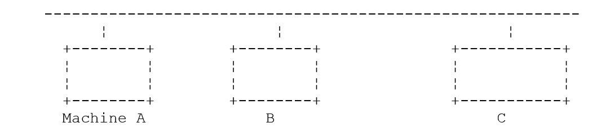
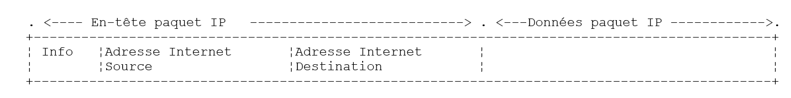
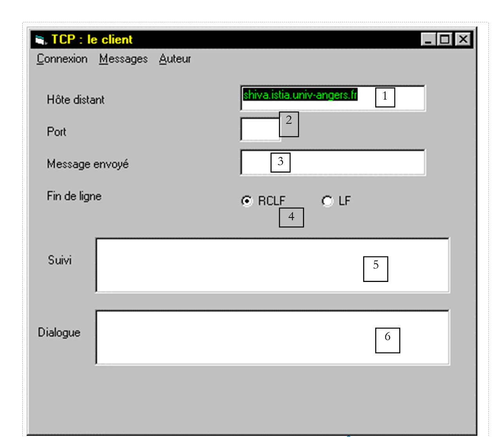
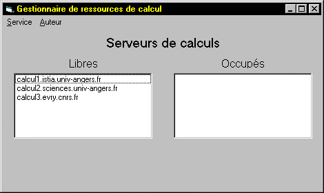

8. Programação TCP-IP
8.1. Informações gerais
8.1.1. Os protocolos da Internet
Apresentamos aqui uma introdução aos protocolos de comunicação da Internet, também conhecidos como conjunto de protocolos TCP/IP (Transfer Control Protocol / Internet Protocol), em referência aos dois protocolos principais. É aconselhável que o leitor tenha uma compreensão geral do funcionamento das redes e, em particular, dos protocolos TCP/IP antes de abordar a criação de aplicações distribuídas.
O texto que se segue é uma tradução parcial de um texto que se encontra no documento «Lan Workplace for Dos - Administrator's Guide» da NOVELL, um documento do início dos anos 90.
O conceito geral de criar uma rede de computadores heterogéneos tem origem em investigações realizadas pela DARPA (Defense Advanced Research Projects Agency) nos Estados Unidos. A DARPA desenvolveu o conjunto de protocolos conhecido como TCP/IP, que permite que máquinas heterogéneas comuniquem entre si. Estes protocolos foram testados numa rede denominada ARPAnet, rede que mais tarde se tornou a rede INTERNET. Os protocolos TCP/IP definem formatos e regras de transmissão e receção independentes da organização das redes e do equipamento utilizado.
A rede concebida pelo DARPA e gerida pelos protocolos TCP/IP é uma rede de comutação de pacotes. Uma rede deste tipo transmite a informação pela rede em pequenos pedaços chamados pacotes. Assim, se um computador transmitir um ficheiro grande, este será dividido em pequenos pedaços que serão enviados pela rede para serem recompostos no destino. O TCP/IP define o formato destes pacotes, nomeadamente:
- origem do pacote
- destino
- comprimento
- tipo
8.1.2. O modelo OSI
Os protocolos TCP/IP seguem, em linhas gerais, o modelo de rede aberta denominado OSI (Open Systems Interconnection Reference Model), definido pela ISO (Organização Internacional de Normalização). Este modelo descreve uma rede ideal em que a comunicação entre máquinas pode ser representada por um modelo de sete camadas:

Cada camada recebe serviços da camada inferior e fornece os seus à camada superior. Suponhamos que duas aplicações localizadas em máquinas A e B diferentes pretendem comunicar: fazem-no ao nível da camada Application. Não precisam de conhecer todos os detalhes do funcionamento da rede: cada aplicação entrega a informação que pretende transmitir à camada inferior: a camada Présentation. A aplicação só precisa, portanto, de conhecer as regras de interface com a camada Présentation.
Assim que a informação se encontra na camada Présentation, é transferida, de acordo com outras regras, para a camada Session e assim sucessivamente, até que a informação chegue ao suporte físico e seja transmitida fisicamente para a máquina de destino. Aí, será submetida ao processo inverso ao que sofreu na máquina remetente.
Em cada camada, o processo remetente encarregado de enviar a informação transmite-a a um processo recetor na outra máquina, pertencente à mesma camada que ele. Faz-o de acordo com determinadas regras a que se chama protocolo da camada. Temos, portanto, o seguinte esquema de comunicação final:

A função das diferentes camadas é a seguinte:
Assegura a transmissão de bits num suporte físico. Nesta camada encontram-se equipamentos terminais de processamento de dados (E.T.T.D.), tais como terminais ou computadores, bem como equipamentos de terminação de circuitos de dados (E.T.C.D.), tais como moduladores/demoduladores, multiplexadores e concentradores. Os pontos de interesse a este nível são: . a escolha da codificação da informação (analógica ou digital) . a escolha do modo de transmissão (síncrono ou assíncrono). | |
Oculta as características físicas da camada Física. Deteta e corrige os erros de transmissão. | |
Gere o percurso que as informações enviadas pela rede devem seguir. A isto chama-se routage: determinar o percurso que uma informação deve seguir para chegar ao seu destinatário. | |
Permite a comunicação entre duas aplicações, enquanto as camadas anteriores apenas permitiam a comunicação entre máquinas. Um serviço prestado por esta camada pode ser o multiplexamento: a camada de transporte poderá utilizar uma mesma ligação de rede (de máquina para máquina) para transmitir informações pertencentes a várias aplicações. | |
Nesta camada, encontramos serviços que permitem a uma aplicação abrir e manter uma sessão de trabalho numa máquina remota. | |
O seu objetivo é uniformizar a representação dos dados nas diferentes máquinas. Assim, os dados provenientes de uma máquina A serão «formatados» pela camada Présentation da máquina A, de acordo com um formato padrão, antes de serem enviados pela rede. Ao chegarem à camada Présentation da máquina destinatária B, que as reconhecerá graças ao seu formato padrão, serão formatadas de outra forma para que a aplicação da máquina B as reconheça. | |
Nesta fase, encontram-se as aplicações geralmente mais próximas do utilizador, tais como o correio eletrónico ou a transferência de ficheiros. |
8.1.3. O modelo TCP/IP
O modelo OSI é um modelo ideal que ainda nunca foi concretizado. O conjunto de protocolos TCP/IP aproxima-se desse modelo da seguinte forma:

Camada Física
Numa rede local, encontra-se geralmente a tecnologia Ethernet ou Token-Ring. Aqui, apresentamos apenas a tecnologia Ethernet.
Ethernet
É o nome dado a uma tecnologia de redes locais de comutação de pacotes inventada pela PARC Xerox no início da década de 1970 e normalizada pela Xerox, Intel e Digital Equipment em 1978. A rede é constituída fisicamente por um cabo coaxial com cerca de 1,27 cm de diâmetro e um comprimento máximo de 500 m. Pode ser estendida por meio de répéteurs, não podendo duas máquinas estar separadas por mais de dois repetidores. O cabo é passivo: todos os elementos ativos encontram-se nos equipamentos ligados ao cabo. Cada equipamento está ligado ao cabo através de uma placa de acesso à rede que inclui:
- um transmissor (transceiver) que deteta a presença de sinais no cabo e converte os sinais analógicos em sinais digitais e vice-versa.
- um acoplador que recebe os sinais digitais do transmissor e os transmite ao computador para processamento, ou vice-versa.
As principais características da tecnologia Ethernet são as seguintes:
- Capacidade de 10 megabits/segundo.
- Topologia em barramento: todos os equipamentos estão ligados ao mesmo cabo

- Rede de difusão — Um equipamento que transmite transfere informações pelo cabo com a morada do equipamento destinatário. Todos os equipamentos ligados recebem então essas informações e apenas aquele a quem se destinam as retém.
- O método de acesso é o seguinte: o transmissor que pretende transmitir escuta o cabo — deteta então a presença ou ausência de uma onda portadora, cuja presença significaria que está em curso uma transmissão. Trata-se da técnica CSMA (Carrier Sense Multiple Access). Na ausência de portadora, um transmissor pode decidir transmitir à sua vez. Podem ser vários os que tomam essa decisão. Os sinais emitidos misturam-se: diz-se que ocorre uma colisão. O transmissor deteta esta situação: ao mesmo tempo que emite no cabo, escuta o que realmente passa por ele. Se detetar que a informação que transita pelo cabo não é a que emitiu, deduz que há uma colisão e deixará de emitir. Os outros transmissores que estavam a emitir farão o mesmo. Cada um retomará a sua transmissão após um intervalo aleatório, que depende de cada transmissor. Esta técnica é designada por CD (Detecção de Colisão). O método de acesso é, assim, designado por CSMA/CD.
- um endereçamento de 48 bits. Cada máquina tem um endereço, aqui designado por endereço físico, que está gravado na placa que a liga ao cabo. A este endereço chama-se endereço Ethernet da máquina.
Camada de Rede
Nesta camada, encontramos os protocolos IP, ICMP, ARP e RARP.
IP (Protocolo de Internet) | Transmite pacotes entre dois nós da rede |
ICMP (Protocolo de Mensagens de Controlo da Internet) | O ICMP estabelece a comunicação entre o programa do protocolo IP de uma máquina e o de outra máquina. Trata-se, portanto, de um protocolo de troca de mensagens no próprio âmbito do protocolo IP. |
ARP (Protocolo de Resolução de Endereços) | estabelece a correspondência entre o endereço de Internet da máquina e o endereço físico da máquina |
RARP (Protocolo de Resolução de Endereços Inverso) | estabelece a correspondência entre o endereço físico da máquina e o endereço de Internet da máquina |
Camadas de Transporte/Sessão
Nesta camada, encontram-se os seguintes protocolos:
TCP (Protocolo de Controlo de Transmissão) | Assegura a entrega fiável de informações entre dois clientes |
UDP (Protocolo de Datagrama do Utilizador) | Assegura a entrega não fiável de informações entre dois clientes |
Camadas de Aplicação/Apresentação/Sessão
Encontram-se aqui vários protocolos:
Emulador de terminal que permite que uma máquina A se ligue a uma máquina B como terminal | |
permite a transferência de ficheiros | |
permite a transferência de ficheiros | |
permite a troca de mensagens entre utilizadores da rede | |
converte um nome de computador num endereço de Internet do computador | |
criado pela Sun MicroSystems, especifica uma representação padrão dos dados, independente dos computadores | |
também definido pela Sun, é um protocolo de comunicação entre aplicações remotas, independente da camada de transporte. Este protocolo é importante: liberta o programador do conhecimento dos detalhes da camada de transporte e torna as aplicações portáteis. Este protocolo baseia-se no protocolo XDR | |
também definido pela Sun; este protocolo permite que uma máquina «veja» o sistema de ficheiros de outra máquina. Baseia-se no protocolo RPC anterior |
8.1.4. Funcionamento dos protocolos da Internet
As aplicações desenvolvidas no ambiente TCP/IP utilizam geralmente vários dos protocolos desse ambiente. Um programa de aplicação comunica com a camada mais elevada dos protocolos. Esta transmite a informação à camada inferior e assim sucessivamente até chegar ao suporte físico. Aí, a informação é fisicamente transferida para o equipamento de destino, onde voltará a atravessar as mesmas camadas, desta vez no sentido inverso, até chegar à aplicação de destino das informações enviadas. O esquema seguinte mostra o percurso da informação:

Vejamos um exemplo: a aplicação FTP, definida ao nível da camada Application e que permite a transferência de ficheiros entre máquinas.
- A aplicação fornece uma sequência de bytes a transmitir à camada transport.
- A camada transport divide esta sequência de bytes em segments e TCP, e acrescenta, no início de cada segmento, o número do mesmo. Os segmentos são encaminhados para a camada de rede, regida pelo protocolo IP.
- A camada IP cria um pacote que encapsula o segmento TCP recebido. No cabeçalho deste pacote, coloca os endereços de Internet das máquinas de origem e de destino. Determina também o endereço físico da máquina de destino. Tudo isto é encaminhado para a camada de ligação de dados e ligação física, ou seja, para a placa de rede que liga a máquina à rede física.
- Aí, o pacote IP é, por sua vez, encapsulado numa trama física e enviado ao seu destinatário através do cabo.
- Na máquina de destino, a camada de Ligação de Dados e Ligação Física faz o inverso: desencapsula o pacote IP da trama física e passa-o para a camada IP.
- A camada IP verifica se o pacote está correto: calcula uma soma, em função dos bits recebidos (checksum), soma essa que deve encontrar no cabeçalho do pacote. Se não for esse o caso, o pacote é rejeitado.
- Se o pacote for considerado correto, a camada IP desencapsula o segmento TCP que se encontra no seu interior e transmite-o à camada superior, a transport.
- A camada transport — a camada TCP no nosso exemplo — analisa o número do segmento para restabelecer a ordem correta dos segmentos.
- Calcula também uma soma de verificação para o segmento TCP. Se for considerada correta, a camada TCP envia um aviso de receção à máquina de origem; caso contrário, o segmento TCP é rejeitado.
- Resta agora à camada TCP transmitir a parte de dados do segmento à aplicação destinatária desses dados na camada superior.
8.1.5. Os problemas de endereçamento na Internet
Um noeud de uma rede pode ser um computador, uma impressora inteligente, um servidor de ficheiros, ou qualquer coisa, na verdade, que possa comunicar utilizando os protocolos TCP/IP. Cada nó possui um endereço físico cujo formato depende do tipo de rede. Numa rede Ethernet, o endereço físico é codificado em 6 octetos. Um endereço de uma rede X25 é um número de 14 dígitos.
O endereço de Internet de um nó é um endereço lógico: é independente do equipamento e da rede utilizada. Trata-se de um endereço de 4 octetos que identifica simultaneamente uma rede local e um nó dessa rede. O endereço de Internet é normalmente representado sob a forma de 4 números, correspondentes aos valores dos 4 octetos, separados por um ponto. Assim, o endereço do computador Lagaffe da Faculdade de Ciências de Angers é 193.49.144.1 e o do computador Liny é 193.49.144.9. Deduz-se, portanto, que o endereço de Internet da rede local é 193.49.144.0. Esta rede pode ter até 254 nós.
Como as moradas de Internet ou moradas IP são independentes da rede, um computador de uma rede A pode comunicar com um computador de uma rede B sem se preocupar com o tipo de rede em que se encontra: basta que conheça a sua morada IP. O protocolo IP de cada rede encarrega-se de efetuar a conversão entre a morada IP e a morada física, em ambos os sentidos.
As endereços IP devem ser todas diferentes. Existem organismos oficiais encarregados de as distribuir. Na verdade, estes organismos atribuem um endereço às redes locais, por exemplo, 193.49.144.0 para a rede da Faculdade de Ciências de Angers. O administrador dessa rede pode, em seguida, atribuir os endereços IP 193.49.144.1 a 193.49.144.254 como entender. Este endereço é geralmente registado num ficheiro específico de cada máquina ligada à rede.
8.1.5.1. As classes de endereços IP
Um endereço IP é uma sequência de 4 octetos, frequentemente indicada como I1.I2.I3.I4, que contém, na verdade, dois endereços:
- o endereço da rede
- o endereço de um nó dessa rede
Dependendo do tamanho destes dois campos, os endereços IP são divididos em 3 classes: classes A, B e C.
Classe A
O endereço IP: I1.I2.I3.I4 tem a forma R1.N1.N2.N3, em que
R1 é o endereço da rede
N1.N2.N3 é o endereço de um computador nessa rede
Mais precisamente, o formato de um endereço IP de classe A é o seguinte:

O endereço de rede ocupa 7 bits e o endereço do nó, 24 bits. Assim, podem existir 127 redes de classe A, cada uma com até 224 nós.
Classe B
Neste caso, o endereço IP: I1.I2.I3.I4 tem o formato R1.R2.N1.N2, em que
R1.R2 é a morada da rede
N1.N2 é o endereço de um computador nessa rede
Mais precisamente, o formato de um endereço IP de classe B é o seguinte:

O endereço da rede ocupa 2 octetos (14 bits, exatamente), tal como o do nó. Assim, podem existir 2¹⁴ redes de classe B, cada uma com até 2¹⁶ nós.
Classe C
Nesta classe, o endereço IP: I1.I2.I3.I4 tem o formato R1.R2.R3.N1, em que
R1.R2.R3 é a morada da rede
N1 é o endereço de um computador nessa rede
Mais precisamente, o formato de um endereço IP de classe C é o seguinte:

O endereço de rede ocupa 3 octetos (menos 3 bits) e o endereço do nó ocupa 1 octeto. Assim, podem existir 221 redes de classe C com até 256 nós.
Sendo o endereço do computador Lagaffe da Faculdade de Ciências de Angers 193.49.144.1, verifica-se que o byte de peso forte vale 193, ou seja, em binário 11000001. Deduz-se, assim, que a rede é de classe C.
Endereços reservados
. Algumas moradas IP são moradas de rede, em vez de moradas de nós na rede. São aquelas em que a parte do nó é definida como 0. Assim, o endereço 193.49.144.0 é o endereço IP da rede da Faculdade de Ciências de Angers. Consequentemente, nenhum nó de uma rede pode ter o endereço zero.
. Quando, num endereço IP, o endereço do nó é composto apenas por 1, trata-se de um endereço de difusão: este endereço designa todos os nós da rede.
. Numa rede de classe C, que permite teoricamente 2⁸ = 256 nós, se retirarmos os dois endereços proibidos, ficamos com apenas 254 endereços autorizados.
8.1.5.2. Os protocolos de conversão Endereço de Internet <--> Endereço físico
Vimos que, durante a transmissão de informações de uma máquina para outra, estas, ao atravessarem a camada IP, eram encapsuladas em pacotes. Estes têm a seguinte forma:

O pacote IP contém, portanto, os endereços de Internet das máquinas de origem e de destino. Quando este pacote for transmitido à camada responsável por o enviar para a rede física, são-lhe adicionadas outras informações para formar a trama física que será finalmente enviada para a rede. Por exemplo, o formato de uma trama numa rede Ethernet é o seguinte:

Na trama final, constam os endereços físicos dos computadores de origem e de destino. Como é que estes são obtidos?
O equipamento remetente, conhecendo o endereço IP do equipamento com o qual pretende comunicar, obtém o endereço físico deste último utilizando um protocolo específico denominado ARP (Address Resolution Protocol).
- Envia um pacote de um tipo especial, denominado pacote ARP, que contém a morada IP da máquina cuja morada física se pretende obter. Também se certificou de incluir nesse pacote a sua própria morada IP, bem como a sua morada física.
- Este pacote é enviado a todos os nós da rede.
- Estes reconhecem a natureza especial do pacote. O nó que reconhece a sua morada IP no pacote responde enviando ao remetente do pacote a sua morada física. Como é que isso é possível? Encontrou no pacote as moradas IP e a morada física do remetente.
- O remetente recebe, assim, a morada física que procurava. Armazena-a na memória para poder utilizá-la posteriormente, caso seja necessário enviar outros pacotes para o mesmo destinatário.
O endereço IP de uma máquina está normalmente registado num dos seus ficheiros, pelo que pode consultá-lo para o conhecer. Este endereço pode ser alterado: basta editar o ficheiro. O endereço físico, por sua vez, está registado na memória da placa de rede e não pode ser alterado.
Quando um administrador pretende organizar a sua rede de forma diferente, pode ser necessário alterar os endereços IP de todos os nós e, por conseguinte, editar os diferentes ficheiros de configuração de cada um deles. Isto pode ser moroso e dar origem a erros, caso haja muitas máquinas. Um método consiste em não atribuir um endereço IP às máquinas: insere-se então um código especial no ficheiro onde a máquina deveria encontrar o seu endereço IP. Ao verificar que não possui o endereço IP, a máquina solicita-o através de um protocolo denominado RARP (Reverse Address Resolution Protocol). Em seguida, envia para a rede um pacote especial denominado pacote RARP, análogo ao pacote ARP anterior, no qual inclui a sua morada física. Este pacote é enviado a todos os nós, que reconhecem então um pacote RARP. Um deles, denominado servidor RARP, possui um ficheiro que indica a correspondência entre a morada física e a morada IP de todos os nós. Responde então ao remetente do pacote RARP, reenviando-lhe a sua morada IP. Um administrador que pretenda reconfigurar a sua rede só tem, portanto, de editar o ficheiro de correspondências do servidor RARP. Este deve, normalmente, ter uma morada fixa IP, que deve poder conhecer sem ter de utilizar ele próprio o protocolo RARP.
8.1.6. A camada de rede denominada camada IP da Internet
O protocolo IP (Internet Protocol) define a forma que os pacotes devem assumir e a forma como devem ser geridos durante a sua transmissão ou receção. Este tipo específico de pacote é denominado datagrama IP. Já o apresentámos:

O importante é que, para além dos dados a transmitir, o datagrama IP contém os endereços de Internet dos equipamentos de origem e de destino. Assim, o equipamento de destino sabe quem lhe está a enviar uma mensagem.
Ao contrário de uma trama de rede, cujo comprimento é determinado pelas características físicas da rede pela qual transita, o comprimento do datagrama IP é definido pelo software e será, portanto, o mesmo em diferentes redes físicas. Vimos que, ao descer da camada de rede para a camada física, o datagrama IP era encapsulado numa trama física. Apresentámos o exemplo da trama física de uma rede Ethernet:

As tramas físicas circulam de nó em nó até ao seu destino, que pode não se encontrar na mesma rede física que a máquina remetente. O pacote IP pode, portanto, ser encapsulado sucessivamente em diferentes tramas físicas nos nós que fazem a ligação entre duas redes de tipos diferentes. Também é possível que o pacote IP seja demasiado grande para ser encapsulado numa trama física. O software IP do nó onde este problema ocorre divide então o pacote IP em fragments de acordo com regras precisas, sendo cada um deles posteriormente enviado pela rede física. Só serão reagrupados no seu destino final.
8.1.6.1. O encaminhamento
O encaminhamento é o método utilizado para encaminhar os pacotes IP até ao seu destino. Existem dois métodos: o encaminhamento direto e o encaminhamento indireto.
Roteamento direto
O encaminhamento direto refere-se ao encaminhamento de um pacote IP diretamente do remetente para o destinatário dentro da mesma rede:
- A máquina remetente de um datagrama IP tem a morada IP do destinatário.
- Obtém a morada física deste último através do protocolo ARP ou nas suas tabelas, caso essa morada já tenha sido obtida.
- Envia o pacote pela rede para essa morada física.
Roteamento indireto
O encaminhamento indireto refere-se ao encaminhamento de um pacote IP para um destino que se encontra numa rede diferente daquela a que pertence o remetente. Neste caso, as partes de endereço de rede dos endereços IP das máquinas de origem e de destino são diferentes. A máquina de origem reconhece este facto. Envia então o pacote para um nó especial denominado router (router), nó que liga uma rede local a outras redes e cujo endereço IP encontra nas suas tabelas, endereço obtido inicialmente num ficheiro, numa memória permanente ou ainda através de informações que circulam na rede.
Um router está ligado a duas redes e possui um endereço IP no interior dessas duas redes.

No nosso exemplo acima:
- A rede n.º 1 tem o endereço de Internet 193.49.144.0 e a rede n.º 2 tem o endereço 193.49.145.0.
- Dentro da rede n.º 1, o router tem o endereço 193.49.144.6 e, dentro da rede n.º 2, o endereço 193.49.145.3.
A função do router consiste em converter o pacote IP que recebe — e que está contido numa trama física típica da rede n.º 1 — numa trama física que possa circular na rede n.º 2. Se a morada IP do destinatário do pacote estiver na rede n.º 2, o router enviará o pacote diretamente para ele; caso contrário, enviá-lo-á para outro router, ligando a rede n.º 2 a uma rede n.º 3 e assim sucessivamente.
8.1.6.2. Mensagens de erro e de controlo
Ainda na camada de rede, ou seja, ao mesmo nível que o protocolo IP, existe o protocolo ICMP (Internet Control Message Protocol). Este serve para enviar mensagens sobre o funcionamento interno da rede: nós em avaria, congestionamento num router, etc... As mensagens ICMP são encapsuladas em pacotes IP e enviadas pela rede. As camadas IP dos diferentes nós tomam as medidas adequadas de acordo com as mensagens ICMP que recebem. Assim, uma aplicação, por si só, nunca deteta estes problemas específicos da rede.
Um nó utilizará as informações ICMP para atualizar as suas tabelas de encaminhamento.
8.1.7. A camada de transporte: os protocolos UDP e TCP
8.1.7.1. O protocolo UDP: User Datagram Protocol
O protocolo UDP permite uma troca não fiável de dados entre dois pontos, ou seja, o encaminhamento correto de um pacote para o seu destino não é garantido. A aplicação, se assim o desejar, pode gerir isso por si própria, aguardando, por exemplo, após o envio de uma mensagem, um aviso de receção, antes de enviar a seguinte.
Por enquanto, ao nível da rede, falámos de endereços IP de máquinas. No entanto, numa máquina podem coexistir simultaneamente diferentes processos, todos eles capazes de comunicar entre si. Por isso, ao enviar uma mensagem, é necessário indicar não só o endereço IP da máquina destinatária, mas também o «nome» do processo destinatário. Este nome é, na verdade, um número, denominado número de porta. Alguns números estão reservados para aplicações padrão: a porta 69 para a aplicação tftp (trivial file transfer protocol), por exemplo.
Os pacotes geridos pelo protocolo UDP são também designados por datagramas. Têm o seguinte formato:

Estes datagramas serão encapsulados em pacotes IP e, posteriormente, em tramas físicas.
8.1.7.2. O protocolo TCP: Protocolo de Controlo de Transferência
Para comunicações seguras, o protocolo UDP é insuficiente: o programador de aplicações deve desenvolver ele próprio um protocolo que lhe permita detetar o encaminhamento correto dos pacotes.
O protocolo TCP (Protocolo de Controlo de Transferência) evita estes problemas. As suas características são as seguintes:
- O processo que pretende transmitir estabelece, em primeiro lugar, uma ligação com o processo destinatário das informações que vai transmitir. Esta ligação é estabelecida entre uma porta da máquina emissora e uma porta da máquina recetora. Entre as duas portas é assim criado um caminho virtual, que ficará reservado exclusivamente aos dois processos que estabeleceram a ligação.
- Todos os pacotes enviados pelo processo de origem seguem este caminho virtual e chegam na ordem em que foram enviados, o que não era garantido no protocolo UDP, uma vez que os pacotes podiam seguir caminhos diferentes.
- A informação transmitida tem um caráter contínuo. O processo emissor envia informações ao seu próprio ritmo. Estas não são necessariamente enviadas de imediato: o protocolo TCP aguarda até ter quantidade suficiente para as enviar. São armazenadas numa estrutura denominada segmento TCP. Este segmento, uma vez preenchido, será transmitido para a camada IP, onde será encapsulado num pacote IP.
- Cada segmento enviado pelo protocolo TCP é numerado. O protocolo TCP destinatário verifica se recebe os segmentos na sequência correta. Por cada segmento recebido corretamente, envia um aviso de receção ao remetente.
- Quando este último o recebe, informa o processo emissor. Este pode, assim, saber que um segmento chegou ao destino, o que não era possível com o protocolo UDP.
- Se, após algum tempo, o protocolo TCP que emitiu um segmento não receber um aviso de receção, reenvia o segmento em questão, garantindo assim a qualidade do serviço de encaminhamento da informação.
- O circuito virtual estabelecido entre os dois processos que comunicam entre si é o full-duplex: isto significa que a informação pode transitar nos dois sentidos. Assim, o processo de destino pode enviar confirmações de receção mesmo enquanto o processo de origem continua a enviar informações. Isto permite, por exemplo, que o protocolo de origem TCP envie vários segmentos sem esperar por um aviso de receção. Se, após algum tempo, verificar que não recebeu o aviso de receção de um determinado segmento n.º n, retomará a transmissão dos segmentos a partir desse ponto.
8.1.8. A camada de Aplicações
Para além dos protocolos UDP e TCP, existem vários protocolos padrão:
TELNET
Este protocolo permite que um utilizador de uma máquina A da rede se ligue a uma máquina B (frequentemente designada por máquina anfitriã). O TELNET emula na máquina A um terminal denominado «universal». O utilizador comporta-se, assim, como se dispusesse de um terminal ligado à máquina B. O Telnet baseia-se no protocolo TCP.
FTP: (Protocolo de Transferência de Ficheiros)
Este protocolo permite a troca de ficheiros entre duas máquinas remotas, bem como operações com ficheiros, tais como a criação de diretórios, por exemplo. Baseia-se no protocolo TCP.
TFTP: (Controlo Trivial de Transferência de Ficheiros)
Este protocolo é uma variante do FTP. Baseia-se no protocolo UDP e é menos sofisticado do que o FTP.
DNS: (Sistema de Nomes de Domínio)
Quando um utilizador pretende trocar ficheiros com um computador remoto, por exemplo, através do FTP, tem de conhecer o endereço de Internet desse computador. Por exemplo, para efetuar FTP na máquina Lagaffe da Universidade de Angers, seria necessário iniciar o FTP da seguinte forma: FTP 193.49.144.1
Isto obriga a ter um diretório que estabeleça a correspondência entre máquina <--> endereço IP. Provavelmente, nesse diretório, as máquinas seriam designadas por nomes simbólicos, tais como:
máquina DPX2/320 da Universidade de Angers
máquina Sun da Universidade de Angers com o endereço ISERPA
É evidente que seria mais prático designar uma máquina por um nome em vez de pela sua morada IP. Coloca-se então o problema da unicidade do nome: existem milhões de máquinas interligadas. Poder-se-ia imaginar que uma entidade centralizada atribuísse os nomes. Isso seria, sem dúvida, bastante pesado. O controlo dos nomes foi, de facto, distribuído por domínios. Cada domínio é gerido por uma entidade geralmente muito ágil, que tem total liberdade na escolha dos nomes das máquinas. Assim, as máquinas em França pertencem ao domínio «fr», gerido pelo Inria de Paris. Para continuar a simplificar as coisas, o controlo é ainda mais distribuído: são criados domínios no interior do domínio «fr». Assim, a Universidade de Angers pertence ao domínio «univ-Angers». O serviço que gere este domínio tem total liberdade para nomear as máquinas da rede da Universidade de Angers. Por enquanto, este domínio não foi subdividido. Mas numa grande universidade com muitas máquinas em rede, tal subdivisão poderia ocorrer.
A máquina DPX2/320 da Universidade de Angers foi designada Lagaffe, enquanto um PC e um 486DX50 foram designados liny. Como referenciar estas máquinas a partir do exterior? Especificando a hierarquia dos domínios a que pertencem. Assim, o nome completo da máquina Lagaffe será:
Dentro dos domínios, podem ser utilizados nomes relativos. Assim, dentro do domínio fr e fora do domínio univ-Angers, a máquina Lagaffe poderá ser referenciada por
Por fim, dentro do domínio univ-Angers, poderá ser referenciada simplesmente por
Uma aplicação pode, portanto, referenciar uma máquina pelo seu nome. No fim de contas, é necessário obter o endereço de Internet dessa máquina. Como é que isso é feito? Suponhamos que, a partir de uma máquina A, se pretenda comunicar com uma máquina B.
- Se a máquina B pertencer ao mesmo domínio que a máquina A, provavelmente encontrar-se-á o seu endereço IP num ficheiro da máquina A.
- Caso contrário, a máquina A encontrará, noutro ficheiro ou no mesmo que anteriormente, uma lista de alguns servidores de nomes com os seus endereços IP. Um servidor de nomes é responsável por estabelecer a correspondência entre o nome de uma máquina e o seu endereço IP. A máquina A enviará um pedido especial ao primeiro servidor de nomes da sua lista, denominado pedido DNS, incluindo, portanto, o nome da máquina procurada. Se o servidor consultado tiver esse nome nos seus registos, enviará à máquina A o endereço IP correspondente. Caso contrário, o servidor também encontrará nos seus ficheiros uma lista de servidores de nomes que pode consultar. E assim o fará. Desta forma, serão consultados vários servidores de nomes, não de forma aleatória, mas de modo a minimizar o número de pedidos. Se a máquina for finalmente encontrada, a resposta será enviada de volta à máquina A.
XDR: (Representação de dados eXternal)
Criado pela Sun MicroSystems, este protocolo especifica uma representação padrão dos dados, independente das máquinas.
RPC: (Chamada de Procedimento Remoto)
Também definido pela Sun, trata-se de um protocolo de comunicação entre aplicações remotas, independente da camada de transporte. Este protocolo é importante: liberta o programador do conhecimento dos detalhes da camada de transporte e torna as aplicações portáveis. Este protocolo baseia-se no protocolo XDR
NFS: Sistema de Ficheiros em Rede
Também definido pela Sun, este protocolo permite que uma máquina «veja» o sistema de ficheiros de outra máquina. Baseia-se no protocolo RPC anterior.
8.1.9. Conclusão
Nesta introdução, apresentámos algumas linhas gerais dos protocolos da Internet. Para aprofundar este tema, recomenda-se a leitura do excelente livro de Douglas Comer:
Título: TCP/IP: Arquitetura, Protocolos, Aplicações.
Autor: Douglas COMER
Editora: InterEditions
8.2. Gestão de endereços de rede em Java
8.2.1. Definição
Cada máquina na Internet é identificada por um endereço ou um nome único. Estas duas entidades são geridas em Java pela classe InetAddress, cujos métodos são os seguintes:
retorna os 4 octetos do endereço IP da instância InetAddress atual | |
fornece o endereço IP da instância InetAddress atual | |
fornece o nome na Internet da instância InetAddress atual | |
fornece a identidade (endereço IP) e o nome na Internet da instância atual InetAddress | |
cria a instância InetAddress da máquina designada por Host. Gera uma exceção se Host for desconhecido. Host pode ser o nome de Internet de uma máquina ou a sua morada IP na forma I1.I2.I3.I4 | |
cria a instância InetAddress da máquina na qual está a ser executado o programa que contém esta instrução. |
8.2.2. Alguns exemplos
8.2.2.1. Identificar a máquina local
import java.net.*;
public class localhost{
public static void main (String arg[]){
try{
InetAddress adresse=InetAddress.getLocalHost();
byte[] IP=adresse.getAddress();
System.out.print("IP=");
int i;
for(i=0;i<IP.length-1;i++) System.out.print(IP[i]+".");
System.out.println(IP[i]);
System.out.println("adresse="+adresse.getHostAddress());
System.out.println("nom="+adresse.getHostName());
System.out.println("identité="+adresse);
} catch (UnknownHostException e){
System.out.println ("Erreur getLocalHost : "+e);
}// fim do try
}// fim da função main
}// fim da classe
Os resultados da execução são os seguintes:
Cada máquina tem um endereço interno IP, que é 127.0.0.1. Quando um programa utiliza este endereço de rede, está a utilizar a máquina na qual está a ser executado. A vantagem deste endereço é que não requer uma placa de rede. Assim, é possível testar programas de rede sem estar ligado a uma rede. Outra forma de designar a máquina local é utilizar o nome «localhost».
8.2.2.2. Identificar qualquer máquina
import java.net.*;
public class getbyname{
public static void main (String arg[]){
String nomMachine;
// recupera-se o argumento
if(arg.length==0)
nomMachine="localhost";
else nomMachine=arg[0];
// tenta-se obter o endereço da máquina
try{
InetAddress adresse=InetAddress.getByName(nomMachine);
System.out.println("IP : "+ adresse.getHostAddress());
System.out.println("nom : "+ adresse.getHostName());
System.out.println("identité : "+ adresse);
} catch (UnknownHostException e){
System.out.println ("Erreur getByName : "+e);
}// fim do try
}// fim da função main
}// fim da classe
Com a chamada **java getbyname**, obtêm-se os seguintes resultados:
Com a chamada java getbyname shiva.istia.univ-angers.fr, obtém-se:
Com a chamada Java getbyname www.ibm.com, obtém-se:
8.3. Comunicações TCP-IP
8.3.1. Informações gerais

Quando uma aplicação AppA de uma máquina A pretende comunicar com uma aplicação AppB de uma máquina B na Internet, tem de saber várias coisas:
- o endereço IP ou o nome da máquina B
- o número da porta com a qual a aplicação AppB opera. Com efeito, a máquina B pode suportar várias aplicações que operam na Internet. Quando recebe informações provenientes da rede, tem de saber a que aplicação essas informações se destinam. As aplicações da máquina B têm acesso à rede através de interfaces, também denominadas portas de comunicação. Esta informação está contida no pacote recebido pela máquina B, para que seja entregue à aplicação correta.
- Os protocolos de comunicação compreendidos pela máquina B. No nosso estudo, utilizaremos apenas os protocolos TCP-IP.
- O protocolo de comunicação aceite pela aplicação AppB. Com efeito, as máquinas A e B vão «comunicar» entre si. O que vão comunicar será encapsulado nos protocolos TCP-IP. No entanto, quando, no final da cadeia, a aplicação AppB receber a informação enviada pela aplicação AppA, terá de ser capaz de a interpretar. Isto é análogo à situação em que duas pessoas, A e B, comunicam por telefone: o seu diálogo é transmitido pelo telefone. A fala será codificada sob a forma de sinais pelo telefone A, transmitida por linhas telefónicas, chegando ao telefone B para aí ser descodificada. A pessoa B ouve então as palavras. É aqui que entra o conceito de protocolo de diálogo: se A falar francês e B não compreender essa língua, A e B não poderão dialogar de forma útil.
Por isso, as duas aplicações que comunicam entre si têm de chegar a acordo quanto ao tipo de diálogo que vão adotar. Assim, por exemplo, o diálogo com um serviço ftp não é o mesmo que com um serviço pop: estes dois serviços não aceitam os mesmos comandos. Possuem um protocolo de comunicação diferente.
8.3.2. As características do protocolo TCP
Aqui, iremos analisar apenas as comunicações de rede que utilizam o protocolo de transporte TCP. Recorde-se aqui as características deste protocolo:
- O processo que pretende transmitir estabelece, em primeiro lugar, uma ligação com o processo destinatário das informações que vai transmitir. Esta ligação é estabelecida entre uma porta da máquina emissora e uma porta da máquina recetora. Entre as duas portas é criado um caminho virtual, que ficará reservado exclusivamente aos dois processos que estabeleceram a ligação.
- Todos os pacotes enviados pelo processo de origem seguem este caminho virtual e chegam na ordem em que foram enviados
- A informação transmitida tem um caráter contínuo. O processo emissor envia informações ao seu próprio ritmo. Estas não são necessariamente enviadas de imediato: o protocolo TCP aguarda até ter quantidade suficiente para as enviar. São armazenadas numa estrutura denominada segmento TCP. Assim que estiver preenchido, este segmento será transmitido para a camada IP, onde será encapsulado num pacote IP.
- Cada segmento enviado pelo protocolo TCP é numerado. O protocolo TCP destinatário verifica se recebe os segmentos na ordem correta. Por cada segmento recebido corretamente, envia um aviso de receção ao remetente.
- Quando este último o recebe, informa o processo emissor. Este pode, assim, saber que um segmento chegou ao destino.
- Se, após algum tempo, o protocolo TCP que emitiu um segmento não receber uma confirmação de receção, reenvia o segmento em questão, garantindo assim a qualidade do serviço de encaminhamento da informação.
- O circuito virtual estabelecido entre os dois processos que comunicam entre si é o full-duplex: isto significa que a informação pode transitar nos dois sentidos. Assim, o processo de destino pode enviar confirmações de receção mesmo enquanto o processo de origem continua a enviar informações. Isto permite, por exemplo, que o protocolo de origem TCP envie vários segmentos sem esperar por um aviso de receção. Se, após algum tempo, verificar que não recebeu o aviso de receção de um determinado segmento n.º n, retomará a transmissão dos segmentos a partir desse ponto.
8.3.3. A relação cliente-servidor
Frequentemente, a comunicação na Internet é assimétrica: a máquina A inicia uma ligação para solicitar um serviço à máquina B, especificando que pretende estabelecer uma ligação com o serviço SB1 da máquina B. Esta aceita ou recusa. Se aceitar, a máquina A pode enviar os seus pedidos ao serviço SB1. Estes devem estar em conformidade com o protocolo de diálogo compreendido pelo serviço SB1. Estabelece-se assim um diálogo de pedido-resposta entre a máquina A, a que se chama máquina cliente, e a máquina B, a que se chama máquina servidor. Um dos dois parceiros encerrará a ligação.
8.3.4. Arquitetura de um cliente
A arquitetura de um programa de rede que solicita os serviços de uma aplicação servidor será a seguinte:
ouvrir la connexion avec le service SB1 de la machine B
si réussite alors
tant que ce n'est pas fini
préparer une demande
l'émettre vers la machine B
attendre et récupérer la réponse
la traiter
fin tant que
finsi
8.3.5. Arquitetura de um servidor
A arquitetura de um programa que presta serviços será a seguinte:
ouvrir le service sur la machine locale
tant que le service est ouvert
se mettre à l'écoute des demandes de connexion sur un port dit port d'écoute
lorsqu'il y a une demande, la faire traiter par une autre tâche sur un autre port dit port de service
fin tant que
O programa servidor trata de forma diferente o pedido de ligação inicial de um cliente das suas solicitações posteriores destinadas a obter um serviço. O programa não presta o serviço propriamente dito. Se o fizesse, durante o período em que o serviço estivesse a ser prestado, deixaria de estar à escuta dos pedidos de ligação e os clientes não seriam, então, atendidos. Por isso, procede de outra forma: assim que uma solicitação de ligação é recebida na porta de escuta e, em seguida, aceite, o servidor cria uma tarefa encarregada de prestar o serviço solicitado pelo cliente. Este serviço é prestado numa outra porta da máquina servidora, denominada porta de serviço. Desta forma, é possível atender vários clientes ao mesmo tempo.
Uma tarefa de serviço terá a seguinte estrutura:
tant que le service n'a pas été rendu totalement
attendre une demande sur le port de service
lorsqu'il y en a une, élaborer la réponse
transmettre la réponse via le port de service
fin tant que
libérer le port de service
8.3.6. A classe Socket
8.3.6.1. Définition
A ferramenta básica utilizada pelos programas que comunicam na Internet é a socket. Esta palavra em inglês significa «tomada de corrente». Aqui, o seu significado é alargado para «tomada de rede». Para que uma aplicação possa enviar e receber informações na Internet, necessita de uma tomada de rede, uma socket. Esta ferramenta foi inicialmente criada nas versões Unix da Universidade de Berkeley. Desde então, foi adaptada para todos os sistemas Unix, bem como para o ambiente Windows. Existe também em máquinas virtuais Java sob duas formas: a classe Socket para aplicações cliente e a classe ServerSocket para aplicações servidor. Apresentamos aqui alguns dos construtores e métodos da classe Socket:
estabelece uma ligação remota com a porta port da máquina host |
retorna o número da porta local utilizada pelo socket | |||
retorna o número da porta remota à qual o socket está ligado | |||
retorna o endereço local InetAddress ao qual o socket está associado | |||
retorna a endereço remoto InetAddress ao qual o socket está ligado | |||
cria um fluxo de entrada que permite ler os dados enviados pelo parceiro remoto | |||
retorna um fluxo de saída que permite enviar dados ao parceiro remoto | |||
fecha o fluxo de entrada do socket | |||
fecha o fluxo de saída do socket | |||
fecha o socket e os seus fluxos de E/S | |||
retorna uma cadeia de caracteres que «representa» o socket | |||
8.3.6.2. Abertura de uma ligação com um servidor
Vimos que, para que uma máquina A estabeleça uma ligação com um serviço de uma máquina B, são necessárias duas informações:
- o endereço IP ou o nome da máquina B
- o número da porta em que o serviço pretendido está a funcionar
O construtor
cria um socket e liga-o à máquina host na porta port. Este construtor gera uma exceção em diferentes casos:
- endereço incorreto
- porta incorreta
- pedido recusado
- …
Temos de tratar esta exceção:
Socket sClient=null;
try{
sClient=new Socket(host,port);
} catch(Exception e){
// a ligação falhou - trata-se do erro
….
}
Se o pedido de ligação for bem-sucedido, é atribuída localmente ao cliente uma porta para comunicar com a máquina B. Uma vez estabelecida a ligação, é possível obter essa porta através do método:
Se a ligação for bem-sucedida, vimos que, por seu lado, o servidor faz com que o serviço seja assegurado por outra tarefa a funcionar numa porta denominada «porta de serviço». Este número de porta pode ser obtido através do método:
8.3.6.3. Enviar informações pela rede
É possível obter um fluxo de escrita no socket e, consequentemente, na rede, através do método:
Tudo o que for enviado neste fluxo será recebido na porta de serviço do servidor. Muitas aplicações apresentam um diálogo sob a forma de linhas de texto terminadas por uma quebra de linha. Por isso, o método println é bastante prático nestes casos. Transforma-se então o fluxo de saída OutputStream num fluxo PrintWriter, que possui o método println. A gravação pode gerar uma exceção.
8.3.6.4. Ler informações provenientes da rede
É possível obter um fluxo de leitura das informações que chegam ao socket com o método:
Tudo o que for lido neste fluxo provém da porta de serviço do servidor. Para aplicações com um diálogo sob a forma de linhas de texto terminadas por uma quebra de linha, é preferível utilizar o método readLine. Para tal, transforma-se o fluxo de entrada InputStream num fluxo BufferedReader, que possui o método readLine(). A leitura pode gerar uma exceção.
8.3.6.5. Encerramento da ligação
É efetuado através do método:
O método pode gerar uma exceção. Os recursos utilizados, nomeadamente a porta de rede, são libertados.
8.3.6.6. A arquitetura do cliente
Dispomos agora dos elementos necessários para descrever a arquitetura básica de um cliente da Internet:
Socket sClient=null;
try{
// estabelece-se ligação ao serviço em execução na porta P da máquina M
sClient=new Socket(M,P);
// estão a ser criados os fluxos de entrada e saída do socket do cliente
BufferedReader in=new BufferedReader(new InputStreamReader(sClient.getInputStream()));
PrintWriter out=new PrintWriter(sClient.getOutputStream(),true);
// ciclo de pedido - resposta
boolean fini=false;
String demande;
String réponse;
while (! fini){
// prepara-se a solicitação
demande=…
// envia-se a solicitação
out.println(demande);
// lê-se a resposta
réponse=in.readLine();
// processa-se a resposta
…
}
// concluído
sClient.close();
} catch(Exception e){
// gestão da exceção
….
}
Não procurámos gerir os diferentes tipos de exceção gerados pelo construtor Socket nem pelos métodos readline, getInputStream, getOutputStream e close, para não complicar o exemplo. Tudo foi reunido numa única exceção.
8.3.7. A classe ServerSocket
8.3.7.1. Définition
Esta classe destina-se à gestão de sockets do lado do servidor. Apresentamos aqui alguns dos construtores e métodos desta classe:
cria um socket de escuta na porta port | |
o mesmo, mas define em count o tamanho da fila de espera e, em c.a.d, o número máximo de ligações de clientes colocadas em espera caso o servidor esteja ocupado quando a ligação do cliente chegar. |
retorna o número da porta de escuta utilizada pelo socket | |
retorna o endereço local InetAddress ao qual o socket está associado | |
coloca o servidor em espera de uma ligação (operação bloqueante). Quando chega uma ligação de um cliente, devolve um socket a partir do qual será prestado o serviço ao cliente. | |
fecha o socket e os seus fluxos de E/S | |
retorna uma cadeia de caracteres que «representa» o socket | |
fecha o socket de serviço e liberta os recursos que lhe estão associados |
8.3.7.2. Abertura do serviço
É efetuada com os dois construtores:
port é a porta de escuta do serviço: aquela para a qual os clientes enviam os seus pedidos de ligação. count é o tamanho máximo da fila de espera do serviço (50 por predefinição), que armazena os pedidos de ligação dos clientes aos quais o servidor ainda não respondeu. Quando a fila de espera está cheia, os pedidos de ligação que chegam são rejeitados. Ambos os construtores geram uma exceção.
8.3.7.3. Aceitação de um pedido de ligação
Quando um cliente faz um pedido de ligação na porta de escuta do serviço, este aceita-o com o método:
Este método devolve uma instância de Socket: trata-se do socket de serviço, através do qual o serviço será prestado, na maioria das vezes por outra tarefa. O método pode gerar uma exceção.
8.3.7.4. Leitura/Escrita através do socket de serviço
Sendo o socket de serviço uma instância da classe Socket, consulte as secções anteriores onde este tema foi abordado.
8.3.7.5. Identificar o cliente
Depois de obter o socket de serviço, o cliente pode ser identificado com o método
da classe Socket. Assim, terá acesso ao endereço IP e ao nome do cliente.
8.3.7.6. Encerrar o serviço
Isto é feito através do método
da classe ServerSocket. Isto liberta os recursos ocupados, nomeadamente a porta de escuta. O método pode gerar uma exceção.
8.3.7.7. Arquitetura básica de um servidor
Com base no que foi dito, é possível descrever a estrutura básica de um servidor:
SocketServer sEcoute=null;
try{
// abertura do serviço
int portEcoute=…
int maxConnexions=…
sEcoute=new ServerSocket(portEcoute,maxConnexions);
// processamento dos pedidos de ligação
boolean fini=false;
Socket sService=null;
while( ! fini){
// aguardar e aceitar um pedido
sService=sEcoute.accept();
// o serviço é prestado por outra tarefa, à qual é passado o socket de serviço
new Service(sService).start();
// volta-se a ficar em espera de pedidos de ligação
}
// Concluído — encerra-se o serviço
sEcoute.close();
} catch (Exception e){
// trata-se a exceção
…
}
A classe Service é um thread que poderia ter o seguinte aspeto:
public class Service extends Thread{
Socket sService; // o socket de serviço
// construtor
public Service(Socket S){
sService=S;
}
// execução
public void run(){
try{
// criando os fluxos de entrada e saída
BufferedReader in=new BufferedReader(new InputStreamReader(sService.getInputStream()));
PrinttWriter out=new PrintWriter(sService.getOutputStream(),true);
// ciclo de pedido-resposta
boolean fini=false;
String demande;
String réponse;
while (! fini){
// lê-se a solicitação
demande=in.readLine();
// processa-se a solicitação
…
// prepara-se a resposta
réponse=…
// envia-se a resposta
out.println(réponse);
}
// concluído
sService.close();
} catch(Exception e){
// trata-se a exceção
….
}// try
} // executar
8.4. Aplicações
8.4.1. Servidor de eco
Propomos escrever um servidor de eco que será iniciado a partir de uma janela DOS através do comando:
O servidor opera na porta indicada como parâmetro. Limita-se a reenviar ao cliente o pedido que este lhe enviou, acompanhado da sua identidade (IP+nome). Aceita duas ligações na sua lista de espera. Temos aqui todos os componentes de um servidor TCP. O programa é o seguinte:
// chamada: serveurEcho porta
// servidor de eco
// envia de volta ao cliente a linha que este lhe enviou
import java.net.*;
import java.io.*;
public class serveurEcho{
public final static String syntaxe="Syntaxe : serveurEcho port";
public final static int nbConnexions=2;
// programa principal
public static void main (String arg[]){
// existe algum argumento
if(arg.length != 1)
erreur(syntaxe,1);
// esse argumento deve ser um número inteiro >0
int port=0;
boolean erreurPort=false;
Exception E=null;
try{
port=Integer.parseInt(arg[0]);
}catch(Exception e){
E=e;
erreurPort=true;
}
erreurPort=erreurPort || port <=0;
if(erreurPort)
erreur(syntaxe+"\n"+"Port incorrect ("+E+")",2);
// cria-se o socket de escuta
ServerSocket ecoute=null;
try{
ecoute=new ServerSocket(port,nbConnexions);
} catch (Exception e){
erreur("Erreur lors de la création de la socket d'écoute ("+e+")",3);
}
// seguimento
System.out.println("Serveur d'écho lancé sur le port " + port);
// loop de serviço
boolean serviceFini=false;
Socket service=null;
while (! serviceFini){
// aguarda um cliente
try{
service=ecoute.accept();
} catch (IOException e){
erreur("Erreur lors de l'acceptation d'une connexion ("+e+")",4);
}
// identifica-se a ligação
try{
System.out.println("Client ["+identifie(service.getInetAddress())+","+
service.getPort()+"] connecté au serveur [" + identifie (InetAddress.getLocalHost())
+ "," + service.getLocalPort() + "]");
} catch (Exception e) {
erreur("identification liaison",1);
}
// o serviço é assegurado por outra tarefa
new traiteClientEcho(service).start();
}// fim do while
}// fim de main
// exibição de erros
public static void erreur(String msg, int exitCode){
System.err.println(msg);
System.exit(exitCode);
}
// identifica
private static String identifie(InetAddress Host){
// identificação do host
String ipHost=Host.getHostAddress();
String nomHost=Host.getHostName();
String idHost;
if (nomHost == null) idHost=ipHost;
else idHost=ipHost+","+nomHost;
return idHost;
}
}// fim da classe
// presta serviço a um cliente do servidor de eco
class traiteClientEcho extends Thread{
private Socket service; // socket de serviço
private BufferedReader in; // fluxo de entrada
private PrintWriter out; // fluxo de saída
// construtor
public traiteClientEcho(Socket service){
this.service=service;
}
// método run
public void run(){
// criação dos fluxos de entrada e saída
try{
in=new BufferedReader(new InputStreamReader(service.getInputStream()));
} catch (IOException e){
erreur("Erreur lors de la création du flux déentrée de la socket de service ("+e+")",1);
}// fim do try
try{
out=new PrintWriter(service.getOutputStream(),true);
} catch (IOException e){
erreur("Erreur lors de la création du flux de sortie de la socket de service ("+e+")",1);
}// fim do try
// a identificação da ligação é enviada ao cliente
try{
out.println("Client ["+identifie(service.getInetAddress())+","+
service.getPort()+"] connecté au serveur [" + identifie (InetAddress.getLocalHost())
+ "," + service.getLocalPort() + "]");
} catch (Exception e) {
erreur("identification liaison",1);
}
// ciclo de leitura (pedido)/gravação (resposta)
String demande,reponse;
try{
// o serviço termina quando o cliente envia um marcador de fim de ficheiro
while ((demande=in.readLine())!=null){
// eco da solicitação
reponse="["+demande+"]";
out.println(reponse);
// o serviço termina quando o cliente envia «fim»
if(demande.trim().toLowerCase().equals("fin")) break;
}// fim do while
} catch (IOException e){
erreur("Erreur lors des échanges client/serveur ("+e+")",3);
}// fim do try
// fecha-se o socket
try{
service.close();
} catch (IOException e){
erreur("Erreur lors de la fermeture de la socket de service ("+e+")",2);
}// fim do try
}// fim de execução
// exibição de erros
public static void erreur(String msg, int exitCode){
System.err.println(msg);
System.exit(exitCode);
}// fim do erro
// identificação
private String identifie(InetAddress Host){
// identificação do host
String ipHost=Host.getHostAddress();
String nomHost=Host.getHostName();
String idHost;
if (nomHost == null) idHost=ipHost;
else idHost=ipHost+","+nomHost;
return idHost;
}
}// fim da classe
As duas classes necessárias ao serviço foram reunidas num único ficheiro-fonte. Apenas uma delas, a que contém a função main, possui o atributo public. A estrutura do servidor está em conformidade com a arquitetura geral dos servidores TCP. Foi-lhe adicionado um método (identifie) que permite identificar a ligação entre o servidor e um cliente. Eis alguns resultados:
O servidor é iniciado através do comando
Em seguida, apresenta na janela de controlo a seguinte mensagem:
Para testar este servidor, utiliza-se o programa telnet, disponível tanto no Unix como no Windows. O Telnet é um cliente TCP universal adequado para todos os servidores que aceitam linhas de texto terminadas por um caractere de fim de linha na sua comunicação. É o caso do nosso servidor de eco. Iniciamos um primeiro cliente telnet no Windows (2000, neste exemplo) digitando telnet numa janela DOS:
DOS>telnet
Microsoft (R) Windows 2000 (TM) version 5.00 (numéro 2195)
Client Telnet Microsoft
Client Telnet numéro 5.00.99203.1
Le caractère d'échappement est 'CTRL+$'
Microsoft Telnet> help
Les commandes peuvent être abrégées. Les commandes prises en charge sont :
close ferme la connexion en cours
display affiche les paramètres d'opération
open ouvre une connexion à un site
quit quitte telnet
set définit les options (entrez 'set ?' pour afficher la liste)
status affiche les informations d'état
unset annule les options (entrez 'unset ?' pour afficher la liste)
? ou help affiche des informations d'aide
Microsoft Telnet> set ?
NTLM Active l'authentification NTLM.
LOCAL_ECHO Active l'écho local.
TERM x (où x est ANSI, VT100, VT52 ou VTNT))
CRLF Envoi de CR et de LF
Microsoft Telnet> set local_echo
Microsoft Telnet> open localhost 187
Por predefinição, o programa telnet não exibe o eco dos comandos digitados no teclado. Para obter esse eco, deve-se executar o comando:
Para estabelecer uma ligação com o servidor, indicando-lhe a porta do serviço de eco (187) e o endereço do computador onde se encontra (localhost), deve-se executar o comando:
Na janela DOS do cliente, recebe-se então a mensagem:
Na janela do servidor, aparece a mensagem:
Serveur d'écho lancé sur le port 187
Client [127.0.0.1,tahe,1059] connecté au serveur [127.0.0.1,tahe,187]
Aqui, tahe e localhost referem-se à mesma máquina. Na janela do cliente telnet, é possível digitar linhas de texto. O servidor repete-as:
Client [127.0.0.1,tahe,1059] connectÚ au serveur [127.0.0.1,tahe,187]
je suis là
[je suis là]
au revoir
[au revoir]
Note-se que a porta do cliente (1059) é corretamente detetada, mas que a porta do serviço (187) é idêntica à porta de escuta (187), o que é inesperado. De facto, seria de esperar obter a porta do socket do serviço e não a porta de escuta. Seria necessário verificar se se obtêm os mesmos resultados no Unix. Agora, vamos iniciar um segundo cliente telnet. A janela do servidor fica assim:
Serveur d'écho lancé sur le port 187
Client [127.0.0.1,tahe,1059] connecté au serveur [127.0.0.1,tahe,187]
Client [127.0.0.1,tahe,1060] connecté au serveur [127.0.0.1,tahe,187]
Na janela do segundo cliente, também é possível digitar linhas de texto:
Client [127.0.0.1,tahe,1060] connecté au serveur [127.0.0.1,tahe,187]
ligne1
[ligne1]
ligne2
[ligne2]
Vê-se, assim, que o servidor de eco pode servir vários clientes ao mesmo tempo. Os clientes telnet podem ser encerrados fechando a janela do DOS na qual estão a ser executados.
8.4.2. Um cliente Java para o servidor de eco
Na secção anterior, utilizámos um cliente telnet para testar o serviço de eco. Vamos agora escrever o nosso próprio cliente:
// chamada: clientEcho porta da máquina
// cliente do servidor de eco
// envia linhas para o servidor, que as devolve em eco
import java.net.*;
import java.io.*;
public class clientEcho{
public final static String syntaxe="Syntaxe : clientEcho machine port";
// programa principal
public static void main (String arg[]){
// existem dois argumentos
if(arg.length != 2)
erreur(syntaxe,1);
// o primeiro argumento deve ser o nome de uma máquina existente
String machine=arg[0];
InetAddress serveurAddress=null;
try{
serveurAddress=InetAddress.getByName(machine);
} catch (Exception e){
erreur(syntaxe+"\nMachine "+machine+" inaccessible (" + e +")",2);
}
// a porta deve ser um número inteiro >0
int port=0;
boolean erreurPort=false;
Exception E=null;
try{
port=Integer.parseInt(arg[1]);
}catch(Exception e){
E=e;
erreurPort=true;
}
erreurPort=erreurPort || port <=0;
if(erreurPort)
erreur(syntaxe+"\nPort incorrect ("+E+")",3);
// estabelece-se a ligação ao servidor
Socket sClient=null;
try{
sClient=new Socket(machine,port);
} catch (Exception e){
erreur("Erreur lors de la création de la socket de communication ("+e+")",4);
}
// identifica-se a ligação
try{
System.out.println("Client : Client ["+identifie(InetAddress.getLocalHost())+","+
sClient.getLocalPort()+"] connecté au serveur [" + identifie (sClient.getInetAddress())
+ "," + sClient.getPort() + "]");
} catch (Exception e) {
erreur("identification liaison ("+e+")",5);
}
// criação do fluxo de leitura das linhas digitadas no teclado
BufferedReader IN=null;
try{
IN=new BufferedReader(new InputStreamReader(System.in));
} catch (Exception e){
erreur("Création du flux d'entrée clavier ("+e+")",6);
}
// criação do fluxo de entrada associado ao socket do cliente
BufferedReader in=null;
try{
in=new BufferedReader(new InputStreamReader(sClient.getInputStream()));
} catch (Exception e){
erreur("Création du flux d'entrée de la socket client("+e+")",7);
}
// criação do fluxo de saída associado ao socket do cliente
PrintWriter out=null;
try{
out=new PrintWriter(sClient.getOutputStream(),true);
} catch (Exception e){
erreur("Création du flux de sortie de la socket ("+e+")",8);
}
// ciclo de pedidos e respostas
boolean serviceFini=false;
String demande=null;
String reponse=null;
// leitura da mensagem enviada pelo servidor logo após a ligação
try{
reponse=in.readLine();
} catch (IOException e){
erreur("Lecture réponse ("+e+")",4);
}
// exibição da resposta
System.out.println("Serveur : " +reponse);
while (! serviceFini){
// leitura de uma linha digitada no teclado
System.out.print("Client : ");
try{
demande=IN.readLine();
} catch (Exception e){
erreur("Lecture ligne ("+e+")",9);
}
// envio de um pedido pela rede
try{
out.println(demande);
} catch (Exception e){
erreur("Envoi demande ("+e+")",10);
}
// aguarda/leitura da resposta
try{
reponse=in.readLine();
} catch (IOException e){
erreur("Lecture réponse ("+e+")",4);
}
// exibição da resposta
System.out.println("Serveur : " +reponse);
// já terminou?
if(demande.trim().toLowerCase().equals("fin")) serviceFini=true;
}
// já terminou
try{
sClient.close();
} catch(Exception e){
erreur("Fermeture socket ("+e+")",11);
}
}// manual
// exibição de erros
public static void erreur(String msg, int exitCode){
System.err.println(msg);
System.exit(exitCode);
}
// identificar
private static String identifie(InetAddress Host){
// identificação do host
String ipHost=Host.getHostAddress();
String nomHost=Host.getHostName();
String idHost;
if (nomHost == null) idHost=ipHost;
else idHost=ipHost+","+nomHost;
return idHost;
}
}// fim da classe
A estrutura deste cliente está em conformidade com a arquitetura geral dos clientes tcp. Aqui, as diferentes exceções possíveis foram tratadas uma a uma, o que torna o programa mais pesado. Eis os resultados obtidos ao testar este cliente:
Client : Client [127.0.0.1,tahe,1045] connecté au serveur [127.0.0.1,localhost,187]
Serveur : Client [127.0.0.1,localhost,1045] connectÚ au serveur [127.0.0.1,tahe,187]
Client : 123
Serveur : [123]
Client : abcd
Serveur : [abcd]
Client : je suis là
Serveur : [je suis là]
Client : fin
Serveur : [fin]
As linhas que começam por Client são as linhas enviadas pelo cliente e as que começam por Serveur são as que o servidor devolveu.
8.4.3. Um cliente TCP genérico
Muitos dos serviços criados nos primórdios da Internet funcionam segundo o modelo do servidor de eco analisado anteriormente: as trocas cliente-servidor realizam-se através da troca de linhas de texto. Vamos escrever um cliente TCP genérico que será iniciado da seguinte forma: java cltTCPgenerique servidor porta
Este cliente TCP irá ligar-se à porta port do servidor serveur. Feito isto, irá criar duas threads:
- um thread encarregado de ler os comandos digitados no teclado e enviá-los para o servidor
- um thread encarregado de ler as respostas do servidor e de as apresentar no ecrã
Porquê duas threads, se na aplicação anterior essa necessidade não se fez sentir? Nessa última, o protocolo de comunicação era conhecido: o cliente enviava uma única linha e o servidor respondia com uma única linha. Cada serviço tem o seu protocolo específico e também se verificam as seguintes situações:
- o cliente tem de enviar várias linhas de texto antes de obter uma resposta
- a resposta de um servidor pode conter várias linhas de texto
Por isso, o ciclo de envio de uma única linha para o servidor — receção de uma única linha enviada pelo servidor — nem sempre é adequado. Vamos, portanto, criar dois ciclos separados:
- um ciclo de leitura dos comandos digitados no teclado para serem enviados ao servidor. O utilizador indicará o fim dos comandos com a palavra-chave fin.
- um ciclo de receção e exibição das respostas do servidor. Este será um ciclo infinito que só será interrompido pelo encerramento do fluxo de rede pelo servidor ou pelo utilizador, que, no teclado, digitará o comando fin.
Para que estes dois ciclos fiquem separados, precisamos de dois threads independentes. Vejamos um exemplo de execução em que o nosso cliente TCP genérico se liga a um serviço SMTP (SendMail Transfer Protocol). Este serviço é responsável pelo encaminhamento do correio eletrónico aos seus destinatários. Funciona na porta 25 e utiliza um protocolo de comunicação do tipo troca de linhas de texto.
Dos>java clientTCPgenerique istia.univ-angers.fr 25
Commandes :
<-- 220 istia.univ-angers.fr ESMTP Sendmail 8.11.6/8.9.3; Mon, 13 May 2002 08:37:26 +0200
help
<-- 502 5.3.0 Sendmail 8.11.6 -- HELP not implemented
mail from: machin@univ-angers.fr
<-- 250 2.1.0 machin@univ-angers.fr... Sender ok
rcpt to: serge.tahe@istia.univ-angers.fr
<-- 250 2.1.5 serge.tahe@istia.univ-angers.fr... Recipient ok
data
<-- 354 Enter mail, end with "." on a line by itself
Subject: test
ligne1
ligne2
ligne3
.
<-- 250 2.0.0 g4D6bks25951 Message accepted for delivery
quit
<-- 221 2.0.0 istia.univ-angers.fr closing connection
[fin du thread de lecture des réponses du serveur]
fin
[fin du thread d'envoi des commandes au serveur]
Vamos comentar estas trocas entre cliente e servidor:
- o serviço SMTP envia uma mensagem de boas-vindas quando um cliente se liga a ele:
- alguns serviços dispõem de um comando help que fornece indicações sobre os comandos que podem ser utilizados com o serviço. Neste caso, não é esse o caso. Os comandos SMTP utilizados no exemplo são os seguintes:
- mail from: expéditeur, para indicar o endereço de e-mail do remetente da mensagem
- rcpt to: destinataire, para indicar o endereço de e-mail do destinatário da mensagem. Se houver vários destinatários, o comando rcpt to: é repetido tantas vezes quantas forem necessárias para cada um dos destinatários.
- data, que sinaliza ao servidor SMTP que se vai enviar a mensagem. Conforme indicado na resposta do servidor, esta consiste numa sequência de linhas terminada por uma linha que contém apenas o caractere ponto. Uma mensagem pode ter cabeçalhos separados do corpo da mensagem por uma linha em branco. No nosso exemplo, colocámos um assunto com a palavra-chave Subject:
- assim que a mensagem for enviada, é possível indicar ao servidor que terminámos com o comando quit. O servidor encerra então a ligação de rede. O thread de leitura pode detetar este evento e parar.
- O utilizador digita então «fin» no teclado para parar também o thread de leitura dos comandos digitados no teclado.
Se verificarmos o e-mail recebido, temos o seguinte (Outlook):

Note-se que o serviço SMTP não consegue detetar se um remetente é válido ou não. Por isso, nunca se pode confiar no campo from de uma mensagem. Neste caso, o remetente machin@univ-angers.fr não existia.
Este cliente TCP genérico permite-nos descobrir o protocolo de comunicação dos serviços da Internet e, a partir daí, criar classes especializadas para os clientes desses serviços. Vamos descobrir o protocolo de comunicação do serviço POP (Post Office Protocol), que permite recuperar os e-mails armazenados num servidor. Funciona na porta 110.
Dos> java clientTCPgenerique istia.univ-angers.fr 110
Commandes :
<-- +OK Qpopper (version 4.0.3) at istia.univ-angers.fr starting.
help
<-- -ERR Unknown command: "help".
user st
<-- +OK Password required for st.
pass monpassword
<-- +OK st has 157 visible messages (0 hidden) in 11755927 octets.
list
<-- +OK 157 visible messages (11755927 octets)
<-- 1 892847
<-- 2 171661
...
<-- 156 2843
<-- 157 2796
<-- .
retr 157
<-- +OK 2796 octets
<-- Received: from lagaffe.univ-angers.fr (lagaffe.univ-angers.fr [193.49.144.1])
<-- by istia.univ-angers.fr (8.11.6/8.9.3) with ESMTP id g4D6wZs26600;
<-- Mon, 13 May 2002 08:58:35 +0200
<-- Received: from jaume ([193.49.146.242])
<-- by lagaffe.univ-angers.fr (8.11.1/8.11.2/GeO20000215) with SMTP id g4D6wSd37691;
<-- Mon, 13 May 2002 08:58:28 +0200 (CEST)
...
<-- ------------------------------------------------------------------------
<-- NOC-RENATER2 Tl. : 0800 77 47 95
<-- Fax : (+33) 01 40 78 64 00 , Email : noc-r2@cssi.renater.fr
<-- ------------------------------------------------------------------------
<--
<-- .
quit
<-- +OK Pop server at istia.univ-angers.fr signing off.
[fin du thread de lecture des réponses du serveur]
fin
[fin du thread d'envoi des commandes au serveur]
Os principais comandos são os seguintes:
- user login, onde se introduz o nome de utilizador no servidor que aloja os nossos e-mails
- pass password, onde se introduz a palavra-passe associada ao início de sessão anterior
- list, para obter a lista de mensagens na forma de número e tamanho em bytes
- retr i, para ler a mensagem n.º i
- quit, para encerrar a sessão.
Vamos agora descobrir o protocolo de diálogo entre um cliente e um servidor Web, que normalmente funciona na porta 80:
Dos> java clientTCPgenerique istia.univ-angers.fr 80
Commandes :
GET /index.html HTTP/1.0
<-- HTTP/1.1 200 OK
<-- Date: Mon, 13 May 2002 07:30:58 GMT
<-- Server: Apache/1.3.12 (Unix) (Red Hat/Linux) PHP/3.0.15 mod_perl/1.21
<-- Last-Modified: Wed, 06 Feb 2002 09:00:58 GMT
<-- ETag: "23432-2bf3-3c60f0ca"
<-- Accept-Ranges: bytes
<-- Content-Length: 11251
<-- Connection: close
<-- Content-Type: text/html
<--
<-- <html>
<--
<-- <head>
<-- <meta http-equiv="Content-Type"
<-- content="text/html; charset=iso-8859-1">
<-- <meta name="GENERATOR" content="Microsoft FrontPage Express 2.0">
<-- <title>Bienvenue a l'ISTIA - Universite d'Angers</title>
<-- </head>
....
<-- face="Verdana"> - Dernire mise jour le <b>10 janvier 2002</b></font></p>
<-- </body>
<-- </html>
<--
[fin du thread de lecture des réponses du serveur]
fin
[fin du thread d'envoi des commandes au serveur]
Um cliente Web envia os seus comandos ao servidor de acordo com o seguinte esquema:
Só depois de receber a linha vazia é que o servidor Web responde. No exemplo, utilizámos apenas um comando:
que solicita ao servidor o URL /index.html e indica que está a trabalhar com o protocolo HTTP versão 1.0. A versão mais recente deste protocolo é a 1.1. O exemplo mostra que o servidor respondeu enviando o conteúdo do ficheiro index.html e, em seguida, encerrou a ligação, uma vez que se observa que o thread de leitura das respostas terminou. Antes de enviar o conteúdo do ficheiro index.html, o servidor web enviou uma série de cabeçalhos terminada por uma linha em branco:
<-- HTTP/1.1 200 OK
<-- Date: Mon, 13 May 2002 07:30:58 GMT
<-- Server: Apache/1.3.12 (Unix) (Red Hat/Linux) PHP/3.0.15 mod_perl/1.21
<-- Last-Modified: Wed, 06 Feb 2002 09:00:58 GMT
<-- ETag: "23432-2bf3-3c60f0ca"
<-- Accept-Ranges: bytes
<-- Content-Length: 11251
<-- Connection: close
<-- Content-Type: text/html
<--
<-- <html>
A linha <html> é a primeira linha do ficheiro /index.html. O que precede denomina-se cabeçalhos HTTP (Protocolo de Transferência HyperText). Não vamos detalhar aqui estes cabeçalhos, mas convém lembrar que o nosso cliente genérico permite o acesso aos mesmos, o que pode ser útil para os compreender. A primeira linha, por exemplo:
indica que o servidor Web contactado compreende o protocolo HTTP/1.1 e que encontrou efetivamente o ficheiro solicitado (200 OK), sendo 200 um código de resposta HTTP. As linhas
indicam ao cliente que irá receber 11251 bytes correspondentes ao texto HTML (HyperText Markup Language) e que, no final da transmissão, a ligação será encerrada.
Temos, portanto, aqui um cliente TCP muito prático. É certo que faz menos do que o programa telnet que utilizámos anteriormente, mas foi interessante escrevê-lo nós próprios. O programa do cliente TCP genérico é o seguinte:
// pacotes importados
import java.io.*;
import java.net.*;
public class clientTCPgenerique{
// recebe como parâmetro as características de um serviço na forma
// servidor e porta
// liga-se ao serviço
// cria um thread para ler os comandos digitados no teclado
// estas serão enviadas para o servidor
// cria um thread para ler as respostas do servidor
// estas serão apresentadas no ecrã
// tudo termina com o comando «fin» digitado no teclado
// variável de instância
private static Socket client;
public static void main(String[] args){
// sintaxe
final String syntaxe="pg serveur port";
// número de argumentos
if(args.length != 2)
erreur(syntaxe,1);
// anota-se o nome do servidor
String serveur=args[0];
// a porta deve ser um número inteiro >0
int port=0;
boolean erreurPort=false;
Exception E=null;
try{
port=Integer.parseInt(args[1]);
}catch(Exception e){
E=e;
erreurPort=true;
}
erreurPort=erreurPort || port <=0;
if(erreurPort)
erreur(syntaxe+"\n"+"Port incorrect ("+E+")",2);
client=null;
// podem ocorrer problemas
try{
// estabelece-se a ligação ao serviço
client=new Socket(serveur,port);
}catch(Exception ex){
// erro
erreur("Impossible de se connecter au service ("+ serveur
+","+port+"), erreur : "+ex.getMessage(),3);
// fim
return;
}//catch
// criam-se os threads de leitura/escrita
new ClientSend(client).start();
new ClientReceive(client).start();
// fim do thread principal
return;
}// main
// exibição de erros
public static void erreur(String msg, int exitCode){
// exibição de erro
System.err.println(msg);
// encerramento com erro
System.exit(exitCode);
}//erro
}//classe
class ClientSend extends Thread {
// classe responsável por ler os comandos digitados no teclado
// e de as enviar para um servidor através de um cliente TCP passado como parâmetro
private Socket client; // o cliente TCP
// construtor
public ClientSend(Socket client){
// onde se indica o cliente TCP
this.client=client;
}//construtor
// método Run da thread
public void run(){
// dados locais
PrintWriter OUT=null; // fluxo de escrita de rede
BufferedReader IN=null; // fluxo do teclado
String commande=null; // comando lido no teclado
// gestão de erros
try{
// criação do fluxo de escrita de rede
OUT=new PrintWriter(client.getOutputStream(),true);
// criação do fluxo de entrada do teclado
IN=new BufferedReader(new InputStreamReader(System.in));
// ciclo de introdução e envio de comandos
System.out.println("Commandes : ");
while(true){
// leitura do comando digitado no teclado
commande=IN.readLine().trim();
// Concluído?
if (commande.toLowerCase().equals("fin")) break;
// envio do comando para o servidor
OUT.println(commande);
// próximo comando
}//while
}catch(Exception ex){
// erro
System.err.println("Envoi : L'erreur suivante s'est produite : " + ex.getMessage());
}//catch
// fim - fecham-se os fluxos
try{
OUT.close();client.close();
}catch(Exception ex){}
// assinala-se o fim do thread
System.out.println("[Envoi : fin du thread d'envoi des commandes au serveur]");
}//execução
}//classe
class ClientReceive extends Thread{
// classe responsável por ler as linhas de texto destinadas a um
// cliente TCP passado como parâmetro
private Socket client; // o cliente TCP
// construtor
public ClientReceive(Socket client){
// regista-se o cliente TCP
this.client=client;
}//construtor
// método Run da thread
public void run(){
// dados locais
BufferedReader IN=null; // fluxo de leitura de rede
String réponse=null; // resposta do servidor
// gestão de erros
try{
// criação do fluxo de leitura de rede
IN=new BufferedReader(new InputStreamReader(client.getInputStream()));
// ciclo de leitura das linhas de texto do fluxo IN
while(true){
// leitura do fluxo de rede
réponse=IN.readLine();
// fluxo encerrado?
if(réponse==null) break;
// exibição
System.out.println("<-- "+réponse);
}//while
}catch(Exception ex){
// erro
System.err.println("Réception : L'erreur suivante s'est produite : " + ex.getMessage());
}//catch
// fim - fecham-se os fluxos
try{
IN.close();client.close();
}catch(Exception ex){}
// assinala-se o fim do thread
System.out.println("[Réception : fin du thread de lecture des réponses du serveur]");
}//execução
}//classe
8.4.4. Um servidor TCP genérico
Agora vamos centrar-nos num servidor
- que exibe no ecrã os comandos enviados pelos seus clientes
- e lhes envia, como resposta, as linhas de texto digitadas no teclado por um utilizador. É, portanto, este último que funciona como servidor.
O programa é iniciado com: java serveurTCPgenerique portEcoute, em que portEcoute é a porta à qual os clientes devem ligar-se. O serviço ao cliente será assegurado por duas threads:
- um thread dedicado exclusivamente à leitura das linhas de texto enviadas pelo cliente
- um thread dedicado exclusivamente à leitura das respostas digitadas pelo utilizador. Este indicará, através do comando «fin», que encerra a ligação com o cliente.
O servidor cria duas threads por cliente. Se houver n clientes, haverá 2n threads ativas ao mesmo tempo. O servidor, por sua vez, nunca se encerra, a não ser que o utilizador prima Ctrl-C no teclado. Vejamos alguns exemplos.
O servidor é iniciado na porta 100 e utiliza-se o cliente genérico para comunicar com ele. A janela do cliente é a seguinte:
E:\data\serge\MSNET\c#\rede\cliente tcp genérico> java clientTCPgenerique localhost 100
Commandes :
commande 1 du client 1
<-- réponse 1 au client 1
commande 2 du client 1
<-- réponse 2 au client 1
fin
L'erreur suivante s'est produite : Impossible de lire les données de la connexion de transport.
[fin du thread de lecture des réponses du serveur]
[fin du thread d'envoi des commandes au serveur]
As linhas que começam por <-- são as enviadas do servidor para o cliente; as restantes são as enviadas do cliente para o servidor. A janela do servidor é a seguinte:
Dos> java serveurTCPgenerique 100
Serveur générique lancé sur le port 100
Thread de lecture des réponses du serveur au client 1 lancé
1 : Thread de lecture des demandes du client 1 lancé
<-- commande 1 du client 1
réponse 1 au client 1
1 : <-- commande 2 du client 1
réponse 2 au client 1
1 : [fin du Thread de lecture des demandes du client 1]
fin
[fin du Thread de lecture des réponses du serveur au client 1]
As linhas que começam por <-- são as enviadas do cliente para o servidor. As linhas N: são as enviadas do servidor para o cliente n.º N. O servidor acima ainda está ativo, embora o cliente 1 já tenha terminado. Inicia-se um segundo cliente para o mesmo servidor:
Dos> java clientTCPgenerique localhost 100
Commandes :
commande 3 du client 2
<-- réponse 3 au client 2
fin
L'erreur suivante s'est produite : Impossible de lire les données de la connexion de transport.
[fin du thread de lecture des réponses du serveur]
[fin du thread d'envoi des commandes au serveur]
A janela do servidor fica então assim:
Dos> java serveurTCPgenerique 100
Serveur générique lancé sur le port 100
Thread de lecture des réponses du serveur au client 1 lancé
1 : Thread de lecture des demandes du client 1 lancé
<-- commande 1 du client 1
réponse 1 au client 1
1 : <-- commande 2 du client 1
réponse 2 au client 1
1 : [fin du Thread de lecture des demandes du client 1]
fin
[fin du Thread de lecture des réponses du serveur au client 1]
Thread de lecture des réponses du serveur au client 2 lancé
2 : Thread de lecture des demandes du client 2 lancé
<-- commande 3 du client 2
réponse 3 au client 2
2 : [fin du Thread de lecture des demandes du client 2]
fin
[fin du Thread de lecture des réponses du serveur au client 2]
^C
Vamos agora simular um servidor web, iniciando o nosso servidor genérico na porta 88:
Dos> java serveurTCPgenerique 88
Serveur générique lancé sur le port 88
Vamos agora abrir um navegador e aceder à página http://localhost:88/exemple.html. O navegador irá então ligar-se à porta 88 da máquina localhost e, em seguida, solicitar a página /exemple.html:

Vejamos agora a janela do nosso servidor:
Dos>java serveurTCPgenerique 88
Serveur générique lancé sur le port 88
Thread de lecture des réponses du serveur au client 2 lancé
2 : Thread de lecture des demandes du client 2 lancé
<-- GET /exemple.html HTTP/1.1
<-- Accept: image/gif, image/x-xbitmap, image/jpeg, image/pjpeg, application/msword, */*
<-- Accept-Language: fr
<-- Accept-Encoding: gzip, deflate
<-- User-Agent: Mozilla/4.0 (compatible; MSIE 6.0; Windows NT 5.0; .NET CLR 1.0.3705; .NET CLR 1.0.2
914)
<-- Host: localhost:88
<-- Connection: Keep-Alive
<--
Descobrimos assim os cabeçalhos HTTP enviados pelo navegador. Isto permite-nos descobrir, pouco a pouco, o protocolo HTTP. Num exemplo anterior, tínhamos criado um cliente Web que enviava apenas o comando GET. Isso tinha sido suficiente. Vemos aqui que o navegador envia outras informações ao servidor. Estas têm como objetivo indicar ao servidor que tipo de cliente tem diante de si. Vemos também que os cabeçalhos HTTP terminam com uma linha em branco.
Vamos elaborar uma resposta para o nosso cliente. O utilizador ao teclado é, neste caso, o verdadeiro servidor e pode elaborar uma resposta manualmente. Recordemos a resposta dada por um servidor Web num exemplo anterior:
<-- HTTP/1.1 200 OK
<-- Date: Mon, 13 May 2002 07:30:58 GMT
<-- Server: Apache/1.3.12 (Unix) (Red Hat/Linux) PHP/3.0.15 mod_perl/1.21
<-- Last-Modified: Wed, 06 Feb 2002 09:00:58 GMT
<-- ETag: "23432-2bf3-3c60f0ca"
<-- Accept-Ranges: bytes
<-- Content-Length: 11251
<-- Connection: close
<-- Content-Type: text/html
<--
<-- <html>
Vamos tentar dar uma resposta semelhante:
...
<-- Host: localhost:88
<-- Connection: Keep-Alive
<--
2 : HTTP/1.1 200 OK
2 : Server: serveur tcp generique
2 : Connection: close
2 : Content-Type: text/html
2 :
2 : <html>
2 : <head><title>Serveur generique</title></head>
2 : <body>
2 : <center>
2 : <h2>Reponse du serveur generique</h2>
2 : </center>
2 : </body>
2 : </html>
2 : fin
L'erreur suivante s'est produite : Impossible de lire les données de la connexion de transport.
[fin du Thread de lecture des demandes du client 2]
[fin du Thread de lecture des réponses du serveur au client 2]
As linhas que começam por 2: são enviadas do servidor para o cliente n.º 2. O comando fin encerra a ligação do servidor ao cliente. Limitaram-nos, na nossa resposta, aos seguintes cabeçalhos HTTP:
HTTP/1.1 200 OK
2 : Server: serveur tcp generique
2 : Connection: close
2 : Content-Type: text/html
2 :
Não indicamos o tamanho do ficheiro que vamos enviar (Content-Length), mas limitamo-nos a indicar que vamos encerrar a ligação (Connection: close) após o envio do mesmo. Isso é suficiente para o navegador. Ao verificar que a ligação foi encerrada, o navegador saberá que a resposta do servidor está concluída e apresentará a página HTML que lhe foi enviada. Esta página é a seguinte:
2 : <html>
2 : <head><title>Serveur generique</title></head>
2 : <body>
2 : <center>
2 : <h2>Reponse du serveur generique</h2>
2 : </center>
2 : </body>
2 : </html>
Em seguida, o utilizador encerra a ligação ao cliente digitando o comando fin. O navegador fica então a saber que a resposta do servidor está concluída e pode, assim, apresentá-la:

Se, no exemplo acima, executarmos o comando View/Source para ver o que o navegador recebeu, obtemos:

ou seja, exatamente o que foi enviado a partir do servidor genérico.
O código do servidor TCP genérico é o seguinte:
// pacotes
import java.io.*;
import java.net.*;
public class serveurTCPgenerique{
// programa principal
public static void main (String[] args){
// recebe as solicitações dos clientes na porta de escuta
// cria um thread para ler os pedidos do cliente
// estas serão apresentadas no ecrã
// cria um thread para ler os comandos digitados no teclado
// estas serão enviadas como resposta ao cliente
// tudo termina com o comando «fin» digitado no teclado
final String syntaxe="Syntaxe : pg port";
// variável de instância
// existe algum argumento
if(args.length != 1)
erreur(syntaxe,1);
// a porta deve ser um número inteiro >0
int port=0;
boolean erreurPort=false;
Exception E=null;
try{
port=Integer.parseInt(args[0]);
}catch(Exception e){
E=e;
erreurPort=true;
}
erreurPort=erreurPort || port <=0;
if(erreurPort)
erreur(syntaxe+"\n"+"Port incorrect ("+E+")",2);
// criamos o serviço de escuta
ServerSocket ecoute=null;
int nbClients=0; // número de clientes processados
try{
// Cria-se o serviço
ecoute=new ServerSocket(port);
// acompanhamento
System.out.println("Serveur générique lancé sur le port " + port);
// Ciclo de atendimento aos clientes
Socket client=null;
while (true){ // ciclo infinito — será interrompido com Ctrl-C
// aguarda um cliente
client=ecoute.accept();
// o serviço é executado em threads separadas
nbClients++;
// são criados os threads de leitura/escrita
new ServeurSend(client,nbClients).start();
new ServeurReceive(client,nbClients).start();
// volta-se a ficar à escuta de pedidos
}// fim do while
}catch(Exception ex){
// é sinalizado o erro
erreur("L'erreur suivante s'est produite : " + ex.getMessage(),3);
}//catch
}// fim de main
// exibição dos erros
public static void erreur(String msg, int exitCode){
// exibição do erro
System.err.println(msg);
// paragem com erro
System.exit(exitCode);
}//erro
}//classe
class ServeurSend extends Thread{
// classe responsável por ler as respostas digitadas no teclado
// e de as enviar a um cliente através de um cliente TCP passado ao construtor
Socket client; // o cliente TCP
int numClient; // n.º do cliente
// construtor
public ServeurSend(Socket client, int numClient){
// regista-se o cliente TCP
this.client=client;
// e o seu n.º
this.numClient=numClient;
}//fabricante
// método Run do thread
public void run(){
// dados locais
PrintWriter OUT=null; // fluxo de escrita na rede
String réponse=null; // resposta lida no teclado
BufferedReader IN=null; // fluxo do teclado
// acompanhamento
System.out.println("Thread de lecture des réponses du serveur au client "+ numClient + " lancé");
// gestão de erros
try{
// criação do fluxo de escrita de rede
OUT=new PrintWriter(client.getOutputStream(),true);
// criação do fluxo do teclado
IN=new BufferedReader(new InputStreamReader(System.in));
// ciclo de introdução e envio de comandos
while(true){
// identificação do cliente
System.out.print("--> " + numClient + " : ");
// leitura da resposta digitada no teclado
réponse=IN.readLine().trim();
// Concluído?
if (réponse.toLowerCase().equals("fin")) break;
// envio da resposta para o servidor
OUT.println(réponse);
// resposta seguinte
}//enquanto
}catch(Exception ex){
// erro
System.err.println("L'erreur suivante s'est produite : " + ex.getMessage());
}//catch
// fim - fecham-se os fluxos
try{
OUT.close();client.close();
}catch(Exception ex){}
// assinala-se o fim do thread
System.out.println("[fin du Thread de lecture des réponses du serveur au client "+ numClient+ "]");
}//execução
}//classe
class ServeurReceive extends Thread{
// classe responsável por ler as linhas de texto enviadas ao servidor
// através de um cliente TCP passado ao construtor
Socket client; // o cliente TCP
int numClient; // n.º do cliente
// construtor
public ServeurReceive(Socket client, int numClient){
// regista-se o cliente TCP
this.client=client;
// e o seu n.º
this.numClient=numClient;
}//fabricante
// método Run do thread
public void run(){
// dados locais
BufferedReader IN=null; // fluxo de leitura de rede
String réponse=null; // resposta do servidor
// acompanhamento
System.out.println("Thread de lecture des demandes du client "+ numClient + " lancé");
// gestão de erros
try{
// criação do fluxo de leitura de rede
IN=new BufferedReader(new InputStreamReader(client.getInputStream()));
// ciclo de leitura das linhas de texto do fluxo IN
while(true){
// leitura do fluxo de rede
réponse=IN.readLine();
// fluxo encerrado?
if(réponse==null) break;
// exibição
System.out.println("<-- "+réponse);
}//while
}catch(Exception ex){
// erro
System.err.println("L'erreur suivante s'est produite : " + ex.getMessage());
}//catch
// fim - fecham-se os fluxos
try{
IN.close();client.close();
}catch(Exception ex){}
// assinala-se o fim do thread
System.out.println("[fin du Thread de lecture des demandes du client "+ numClient+"]");
}//execução
}//classe
8.4.5. Um cliente Web
No exemplo anterior, vimos alguns dos cabeçalhos HTTP enviados por um navegador:
<-- GET /exemple.html HTTP/1.1
<-- Accept: image/gif, image/x-xbitmap, image/jpeg, image/pjpeg, application/msword, */*
<-- Accept-Language: fr
<-- Accept-Encoding: gzip, deflate
<-- User-Agent: Mozilla/4.0 (compatible; MSIE 6.0; Windows NT 5.0; .NET CLR 1.0.3705; .NET CLR 1.0.2
914)
<-- Host: localhost:88
<-- Connection: Keep-Alive
<--
Vamos criar um cliente Web ao qual se passaria como parâmetro um URL e que exibiria no ecrã o conteúdo desse URL. Partiremos do princípio de que o servidor Web contactado para o URL suporta o protocolo HTTP 1.1. Dos cabeçalhos anteriores, utilizaremos apenas os seguintes:
- o primeiro cabeçalho indica qual a página que pretendemos
- o segundo, qual o servidor que estamos a consultar
- o terceiro indica que queremos que o servidor encerre a ligação depois de nos ter respondido.
Se, no exemplo acima, substituirmos GET por HEAD, o servidor enviar-nos-á apenas os cabeçalhos HTTP e não a página HTML.
O nosso cliente web será chamado da seguinte forma: java clientweb URL cmd, em que URL é oURL pretendido e «cmd» uma das duas palavras-chave «GET» ou «HEAD» para indicar se se pretende apenas os cabeçalhos («HEAD») ou também o conteúdo da página (GET). Vejamos um primeiro exemplo. Iniciamos o servidor IIS e, em seguida, o cliente web na mesma máquina:
dos>java clientweb http://localhost HEAD
HTTP/1.1 302 Object moved
Server: Microsoft-IIS/5.0
Date: Mon, 13 May 2002 09:23:37 GMT
Connection: close
Location: /IISSamples/Default/welcome.htm
Content-Length: 189
Content-Type: text/html
Set-Cookie: ASPSESSIONIDGQQQGUUY=HMFNCCMDECBJJBPPBHAOAJNP; path=/
Cache-control: private
A resposta
significa que a página solicitada mudou de local (ou seja, de URL). O novo endereço URL é indicado pelo cabeçalho Location:
Se utilizarmos GET em vez de HEAD na chamada ao cliente Web:
dos>java clientweb http://localhost GET
HTTP/1.1 302 Object moved
Server: Microsoft-IIS/5.0
Date: Mon, 13 May 2002 09:33:36 GMT
Connection: close
Location: /IISSamples/Default/welcome.htm
Content-Length: 189
Content-Type: text/html
Set-Cookie: ASPSESSIONIDGQQQGUUY=IMFNCCMDAKPNNGMGMFIHENFE; path=/
Cache-control: private
<head><title>L'objet a changé d'emplacement</title></head>
<body><h1>L'objet a changé d'emplacement</h1>Cet objet peut être trouvé <a HREF="/IISSamples/Default/we
lcome.htm">ici</a>.</body>
Obtenemos o mesmo resultado que com o HEAD, além do corpo da página HTML. O programa é o seguinte:
// pacotes importados
import java.io.*;
import java.net.*;
public class clientweb{
// solicita um URL
// exibe o conteúdo da mesma no ecrã
public static void main(String[] args){
// sintaxe
final String syntaxe="pg URI GET/HEAD";
// número de argumentos
if(args.length != 2)
erreur(syntaxe,1);
// regista-se o URI solicitado
String URLString=args[0];
String commande=args[1].toUpperCase();
// verificação da validade do URI
URL url=null;
try{
url=new URL(URLString);
}catch (Exception ex){
// URI incorreto
erreur("L'erreur suivante s'est produite : " + ex.getMessage(),2);
}//detetado
// verificação do pedido
if(! commande.equals("GET") && ! commande.equals("HEAD")){
// encomenda incorreta
erreur("Le second paramètre doit être GET ou HEAD",3);
}
// extraímos as informações úteis do URL
String path=url.getPath();
if(path.equals("")) path="/";
String query=url.getQuery();
if(query!=null) query="?"+query; else query="";
String host=url.getHost();
int port=url.getPort();
if(port==-1) port=url.getDefaultPort();
// é possível prosseguir
Socket client=null; // o cliente
BufferedReader IN=null; // o fluxo de leitura do cliente
PrintWriter OUT=null; // o fluxo de escrita do cliente
String réponse=null; // resposta do servidor
try{
// estabelece-se a ligação ao servidor
client=new Socket(host,port);
// criam-se os fluxos de entrada e saída do cliente TCP
IN=new BufferedReader(new InputStreamReader(client.getInputStream()));
OUT=new PrintWriter(client.getOutputStream(),true);
// solicitação do URL - envio dos cabeçalhos HTTP
OUT.println(commande + " " + path + query + " HTTP/1.1");
OUT.println("Host: " + host + ":" + port);
OUT.println("Connection: close");
OUT.println();
// lê-se a resposta
while((réponse=IN.readLine())!=null){
// processa-se a resposta
System.out.println(réponse);
}//enquanto
// terminou
client.close();
} catch(Exception e){
// trata-se a exceção
erreur(e.getMessage(),4);
}//catch
}//main
// exibição de erros
public static void erreur(String msg, int exitCode){
// exibição do erro
System.err.println(msg);
// encerramento com erro
System.exit(exitCode);
}//erro
}//classe
A única novidade neste programa é a utilização da classe URL. O programa recebe um URL (Uniform Resource Locator) ou um URI (Uniform Resource Identifier) com o formato http://serveur:port/cheminPageHTML?param1=val1;param2=val2;.... A classe URL permite-nos decompor a cadeia de caracteres do URL nos seus diferentes elementos. Um objeto URL é construído a partir da cadeia de caracteres URLstring recebida como parâmetro:
// verificação da validade do URL
URL url=null;
try{
url=new URL(URLString);
}catch (Exception ex){
// URI incorreto
erreur("L'erreur suivante s'est produite : " + ex.getMessage(),2);
}//captura
Se a cadeia URL recebida como parâmetro não for um URL válido (ausência do protocolo, do servidor, etc.), é lançada uma exceção. Isto permite-nos verificar a validade do parâmetro recebido. Depois de criado o objeto URL, temos acesso aos seus diferentes elementos. Assim, se o objeto url do código anterior tiver sido criado a partir da cadeia
teremos:
url.getHost()=serveur
url.getPort()=port ou -1 se a porta não estiver indicada
url.getPath()=cheminPageHTML ou a cadeia vazia se não houver caminho
url.getQuery()=param1=val1;param2=val2;... ou null se não houver qualquer pedido
uri.getProtocol()=http
8.4.6. Cliente Web que gere redirecionamentos
O cliente Web anterior não gere uma eventual redireção do URL que solicitou. O cliente seguinte gere-a.
- Ele lê a primeira linha dos cabeçalhos HTTP enviados pelo servidor para verificar se contém a cadeia «302 Object moved», que indica um redirecionamento
- Lê os cabeçalhos seguintes. Se houver redirecionamento, procura a linha «Location: url», que indica o novo URL da página solicitada, e regista esse URL.
- Exibe o resto da resposta do servidor. Se houver redirecionamento, os passos 1 a 3 são repetidos com o novo URL. O programa não aceita mais do que um redirecionamento. Este limite é definido por uma constante que pode ser alterada.
Eis um exemplo:
Dos>java clientweb2 http://localhost GET
HTTP/1.1 302 Object moved
Server: Microsoft-IIS/5.0
Date: Mon, 13 May 2002 11:38:55 GMT
Connection: close
Location: /IISSamples/Default/welcome.htm
Content-Length: 189
Content-Type: text/html
Set-Cookie: ASPSESSIONIDGQQQGUUY=PDGNCCMDNCAOFDMPHCJNPBAI; path=/
Cache-control: private
<head><title>L'objet a chang d'emplacement</title></head>
<body><h1>L'objet a chang d'emplacement</h1>Cet objet peut tre trouv <a HREF="/IISSamples/Default/we
lcome.htm">ici</a>.</body>
<--Redirection vers l'URL http://localhost:80/IISSamples/Default/welcome.htm-->
HTTP/1.1 200 OK
Server: Microsoft-IIS/5.0
Connection: close
Date: Mon, 13 May 2002 11:38:55 GMT
Content-Type: text/html
Accept-Ranges: bytes
Last-Modified: Mon, 16 Feb 1998 21:16:22 GMT
ETag: "0174e21203bbd1:978"
Content-Length: 4781
<html>
<head>
<title>Bienvenue dans le Serveur Web personnel</title>
</head>
....
</body>
</html>
O programa é o seguinte:
// pacotes importados
import java.io.*;
import java.net.*;
import java.util.regex.*;
public class clientweb2{
// solicita um URL
// exibe o conteúdo do mesmo no ecrã
public static void main(String[] args){
// sintaxe
final String syntaxe="pg URL GET/HEAD";
// número de argumentos
if(args.length != 2)
erreur(syntaxe,1);
// regista-se o URI solicitado
String URLString=args[0];
String commande=args[1].toUpperCase();
// verificação da validade do URI
URL url=null;
try{
url=new URL(URLString);
}catch (Exception ex){
// URI incorreto
erreur("L'erreur suivante s'est produite : " + ex.getMessage(),2);
}//detetado
// verificação do pedido
if(! commande.equals("GET") && ! commande.equals("HEAD")){
// encomenda incorreta
erreur("Le second paramètre doit être GET ou HEAD",3);
}
// é possível trabalhar
Socket client=null; // o cliente
BufferedReader IN=null; // o fluxo de leitura do cliente
PrintWriter OUT=null; // o fluxo de escrita do cliente
String réponse=null; // resposta do servidor
final int nbRedirsMax=1; // não é permitido mais do que um redirecionamento
int nbRedirs=0; // número de redirecionamentos em curso
String premièreLigne; // 1.ª linha da resposta
boolean redir=false; // indica se existe ou não redirecionamento
String locationString=""; // a cadeia URL de um eventual redirecionamento
// expressão regular para encontrar uma sequência URL de redirecionamento
Pattern location=Pattern.compile("^Location: (.+?)$");
// gestão de erros
try{
// podem existir várias cadeias URL a consultar, caso haja redirecionamentos
while(nbRedirs<=nbRedirsMax){
// extraímos as informações úteis do URL
String protocol=url.getProtocol();
String path=url.getPath();
if(path.equals("")) path="/";
String query=url.getQuery();
if(query!=null) query="?"+query; else query="";
String host=url.getHost();
int port=url.getPort();
if(port==-1) port=url.getDefaultPort();
// estabelece-se ligação ao servidor
client=new Socket(host,port);
// criam-se os fluxos de entrada e saída do cliente TCP
IN=new BufferedReader(new InputStreamReader(client.getInputStream()));
OUT=new PrintWriter(client.getOutputStream(),true);
// solicita-se o URL - envio dos cabeçalhos HTTP
OUT.println(commande + " " + path + query + " HTTP/1.1");
OUT.println("Host: " + host + ":" + port);
OUT.println("Connection: close");
OUT.println();
// lê-se a primeira linha da resposta
premièreLigne=IN.readLine();
// eco no ecrã
System.out.println(premièreLigne);
// redirecionamento?
if(premièreLigne.endsWith("302 Object moved")){
// existe um redirecionamento
redir=true;
nbRedirs++;
}//if
// cabeçalhos HTTP seguintes até encontrar a linha vazia que indica o fim dos cabeçalhos
boolean locationFound=false;
while(!(réponse=IN.readLine()).equals("")){
// exibe-se a resposta
System.out.println(réponse);
// se houver redirecionamento, procura-se o cabeçalho Location
if(redir && ! locationFound){
// compara-se a linha com a expressão relacional «location»
Matcher résultat=location.matcher(réponse);
if(résultat.find()){
// se for encontrada, regista-se o URL de redirecionamento
locationString=résultat.group(1);
// regista-se que foi encontrado
locationFound=true;
}//se
}//se
// cabeçalho seguinte
}//enquanto
// linhas seguintes da resposta
System.out.println(réponse);
while((réponse=IN.readLine())!=null){
// a resposta é apresentada
System.out.println(réponse);
}//enquanto
// encerra-se a ligação
client.close();
// já terminámos?
if ( ! locationFound || nbRedirs>nbRedirsMax)
break;
// é necessário efetuar um redirecionamento — constrói-se o novo URL
URLString=protocol +"://"+host+":"+port+locationString;
url=new URL(URLString);
// acompanhamento
System.out.println("\n<--Redirection vers l'URL "+URLString+"-->\n");
}//enquanto
} catch(Exception e){
// tratamos a exceção
erreur(e.getMessage(),4);
}//catch
}//main
// exibição de erros
public static void erreur(String msg, int exitCode){
// exibição do erro
System.err.println(msg);
// encerramento com erro
System.exit(exitCode);
}//erro
}//classe
8.4.7. Servidor de cálculo de impostos
Retomamos o exercício IMPOTS, já abordado de várias formas. Recorde-se a última versão:
Foi criada uma classe base «impostos». Os seus atributos são três tabelas de números:
public class impots{
// os dados necessários para o cálculo do imposto
// provêm de uma fonte externa
protected double[] limites=null;
protected double[] coeffR=null;
protected double[] coeffN=null;
// fabricante em branco
protected impots(){}
// construtor
public impots(double[] LIMITES, double[] COEFFR, double[] COEFFN) throws Exception{
A classe «impots» tem dois construtores:
- um construtor ao qual se passam os três tabuletos de dados necessários para o cálculo do imposto
- um construtor sem parâmetros, utilizável apenas por classes filhas
A partir desta classe foi derivada a classe impotsJDBC, que permite preencher as três tabelas limites, coeffR e coeffN a partir do conteúdo de uma base de dados:
public class impotsJDBC extends impots{
// adição de um construtor que permite construir
// as tabelas «limites», «coeffr» e «coeffn» a partir da tabela
// de impostos de uma base de dados
public impotsJDBC(String dsnIMPOTS, String userIMPOTS, String mdpIMPOTS)
throws SQLException,ClassNotFoundException{
// dsnIMPOTS: nome DSN da base de dados
// userIMPOTS, mdpIMPOTS: nome de utilizador/palavra-passe de acesso à base de dados
Tinha sido desenvolvida uma aplicação gráfica. A aplicação utilizava um objeto da classe impotsJDBC. A aplicação e esse objeto estavam na mesma máquina. Propomos colocar o programa de teste e o objeto impotsJDBC em máquinas diferentes. Teremos uma aplicação cliente-servidor em que o objeto remoto impotsJDBC será o servidor. A nova classe chama-se ServeurImpots e deriva da classe impotsJDBC:
// pacotes importados
import java.net.*;
import java.io.*;
import java.sql.*;
public class ServeurImpots extends impotsJDBC {
// atributos
int portEcoute; // a porta de escuta dos pedidos dos clientes
boolean actif; // estado do servidor
// fabricante
public ServeurImpots(int portEcoute,String DSNimpots, String USERimpots, String MDPimpots)
throws IOException, SQLException, ClassNotFoundException {
// construção pai
super(DSNimpots, USERimpots, MDPimpots);
// regista-se a porta de escuta
this.portEcoute=portEcoute;
// por enquanto inativo
actif=false;
// cria e inicia um thread para ler os comandos digitados no teclado
// o servidor será gerido a partir destes comandos
Thread admin=new Thread(){
public void run(){
try{
admin();
}catch (Exception ignored){}
}
};
admin.start();
}//ServeurImpots
O único parâmetro novo no construtor é a porta de escuta dos pedidos dos clientes. Os restantes parâmetros são passados diretamente para a classe base impotsJDBC. O servidor de impostos é controlado por comandos introduzidos através do teclado. Por isso, cria-se um thread para ler esses comandos. Haverá duas opções possíveis: start para iniciar o serviço e stop para o encerrar definitivamente. O método admin que gere estes comandos é o seguinte:
public void admin() throws IOException{
// lê os comandos de administração do servidor introduzidos através do teclado
// num ciclo infinito
String commande=null;
BufferedReader IN=new BufferedReader(new InputStreamReader(System.in));
while(true){
// solicita
System.out.print("Serveur d'impôts>");
// leitura do comando
commande=IN.readLine().trim().toLowerCase();
// execução do comando
if(commande.equals("start")){
// ativo?
if(actif){
//erro
System.out.println("Le serveur est déjà actif");
// continua
continue;
}//se
// criamos e iniciamos o serviço de escuta
Thread ecoute=new Thread(){
public void run(){
ecoute();
}
};
ecoute.start();
}//if
else if(commande.equals("stop")){
// fim de todos os threads de execução
System.exit(0);
}//se
else {
// erro
System.out.println("Commande incorrecte. Utilisez (start,stop)");
}//se
}//enquanto
}//administrador
Se o comando introduzido no teclado for start, é iniciado um thread de escuta de pedidos dos clientes. Se o comando introduzido for stop, todos os threads são interrompidos. O thread de escuta executa o método ecoute:
public void ecoute(){
// thread de escuta de pedidos dos clientes
// cria-se o serviço de escuta
ServerSocket ecoute=null;
try{
// cria-se o serviço
ecoute=new ServerSocket(portEcoute);
// acompanhamento
System.out.println("Serveur d'impôts lancé sur le port " + portEcoute);
// ciclo de serviço
Socket liaisonClient=null;
while (true){ // ciclo infinito
// aguarda um cliente
liaisonClient=ecoute.accept();
// o serviço é assegurado por outra tarefa
new traiteClientImpots(liaisonClient,this).start();
// volta-se a ficar à escuta de pedidos
}// fim do while
}catch(Exception ex){
// é sinalizado o erro
erreur("L'erreur suivante s'est produite : " + ex.getMessage(),3);
}//catch
}//thread de escuta
Encontramos um servidor TCP clássico a escutar na porta portEcoute. Os pedidos dos clientes são processados pelo método run da thread traiteCientImpots, ao cujo construtor são passados dois parâmetros:
- o objeto Socket liaisonClient, que permitirá aceder ao cliente
- o objeto impotsJDBC this, que dará acesso ao método this.calculer de cálculo do imposto.
// -------------------------------------------------------
// presta o serviço a um cliente do servidor de impostos
class traiteClientImpots extends Thread{
private Socket liaisonClient; // ligação com o cliente
private BufferedReader IN; // fluxo de entrada
private PrintWriter OUT; // fluxo de saída
private impotsJDBC objImpots; // objeto «Impostos»
// construtor
public traiteClientImpots(Socket liaisonClient,impotsJDBC objImpots){
this.liaisonClient=liaisonClient;
this.objImpots=objImpots;
}//construtor
O método run processa os pedidos dos clientes. Trata-se de linhas de texto que podem assumir duas formas:
- cálculo de casado (s/n) nbEnfants salaireAnnuel
- fincalculs
A forma 1 permite o cálculo de um imposto; a forma 2 encerra a ligação cliente-servidor.
// método de execução
public void run(){
// presta o serviço ao cliente
try{
// fluxo de entrada
IN=new BufferedReader(new InputStreamReader(liaisonClient.getInputStream()));
// fluxo de saída
OUT=new PrintWriter(liaisonClient.getOutputStream(),true);
// envio de uma mensagem de boas-vindas ao cliente
OUT.println("Bienvenue sur le serveur d'impôts");
// ciclo de leitura de pedido/gravação de resposta
String demande=null;
String[] champs=null; // elementos da solicitação
String commande=null; // o comando do cliente: cálculo ou fim dos cálculos
while ((demande=IN.readLine())!=null){
// decompõe-se a solicitação em campos
champs=demande.trim().toLowerCase().split("\\s+");
// duas solicitações aceites: cálculo e fim dos cálculos
commande=champs[0];
if(! commande.equals("calcul") && ! commande.equals("fincalculs")){
// erro do cliente
OUT.println("Commande incorrecte. Utilisez (calcul,fincalculs).");
// pedido seguinte
continue;
}//if
if(commande.equals("calcul")) calculerImpôt(champs);
if(commande.equals("fincalculs")){
// mensagem de despedida ao cliente
OUT.println("Au revoir...");
// libertação de recursos
try{ OUT.close();IN.close();liaisonClient.close();}
catch(Exception ex){}
// fim
return;
}//se
//pedido seguinte
}//enquanto
}catch (Exception e){
erreur("L'erreur suivante s'est produite ("+e+")",2);
}// fim do try
}// fim da execução
O cálculo do imposto é efetuado pelo método calculerImpôt, que recebe como parâmetro a tabela de campos do pedido efetuado pelo cliente. A validade do pedido é verificada e, se for o caso, o imposto é calculado e devolvido ao cliente.
// cálculo de impostos
public void calculerImpôt(String[] champs){
// processa o pedido: cálculo para casados nbEnfants salaireAnnuel
// descomposto em campos na tabela de campos
String marié=null;
int nbEnfants=0;
int salaireAnnuel=0;
// validade dos argumentos
try{
// são necessários, pelo menos, 4 campos
if(champs.length!=4) throw new Exception();
// casado
marié=champs[1];
if (! marié.equals("o") && ! marié.equals("n")) throw new Exception();
// filhos
nbEnfants=Integer.parseInt(champs[2]);
// salário
salaireAnnuel=Integer.parseInt(champs[3]);
}catch (Exception ignored){
// erro de formato
OUT.println(" syntaxe : calcul marié(O/N) nbEnfants salaireAnnuel");
// concluído
return;
}//se
// é possível calcular o imposto
long impot=objImpots.calculer(marié.equals("o"),nbEnfants,salaireAnnuel);
// envia-se a resposta ao cliente
OUT.println(""+impot);
}//calcular
Um programa de teste poderia ser o seguinte:
// chamada: serveurImpots porta dsnImpots userImpots mdpImpots
import java.io.*;
public class testServeurImpots{
public static final String syntaxe="Syntaxe : pg port dsnImpots userImpots mdpImpots";
// programa principal
public static void main (String[] args){
// são necessários 4 argumentos
if(args.length != 4)
erreur(syntaxe,1);
// a porta deve ser um número inteiro >0
int port=0;
boolean erreurPort=false;
Exception E=null;
try{
port=Integer.parseInt(args[0]);
}catch(Exception e){
E=e;
erreurPort=true;
}
erreurPort=erreurPort || port <=0;
if(erreurPort)
erreur(syntaxe+"\n"+"Port incorrect ("+E+")",2);
// cria-se o servidor de impostos
try{
new ServeurImpots(port,args[1],args[2],args[3]);
}catch(Exception ex){
//erro
System.out.println("L'erreur suivante s'est produite : "+ex.getMessage());
}//catch
}//Main
// exibição de erros
public static void erreur(String msg, int exitCode){
// exibição de erro
System.err.println(msg);
// paragem com erro
System.exit(exitCode);
}//erro
}// fim da classe
Introduzimos no programa de teste os dados necessários para a criação de um objeto ServeurImpots e, a partir daí, o programa cria esse objeto.
Vamos tentar uma primeira execução:
dos>java testServeurImpots 124 mysql-dbimpots admimpots mdpimpots
Serveur d'impôts>start
Serveur d'impôts>Serveur d'écho lancé sur le port 124
stop
O comando
cria um objeto ServeurImpots que ainda não está a ouvir os pedidos dos clientes. É o comando «start», digitado no teclado, que inicia essa escuta. O comando «stop» encerra o servidor. Vamos agora utilizar um cliente. Utilizaremos o cliente genérico criado anteriormente. O servidor está em execução:
dos>java testServeurImpots 124 mysql-dbimpots admimpots mdpimpots
Serveur d'impôts>start
Serveur d'impôts>Serveur d'écho lancé sur le port 124
O cliente genérico é iniciado noutra janela do DOS:
Vê-se que o cliente recebeu corretamente a mensagem de boas-vindas do servidor. Enviamos outros comandos:
x
<-- Commande incorrecte. Utilisez (calcul,fincalculs).
calcul
<-- syntaxe : calcul marié(O/N) nbEnfants salaireAnnuel
calcul o 2 200000
<-- 22506
calcul n 2 200000
<-- 33388
fincalculs
<-- Au revoir...
[fin du thread de lecture des réponses du serveur]
fin
[fin du thread d'envoi des commandes au serveur]
Voltamos à janela do servidor para o desligar:
dos>java testServeurImpots 124 mysql-dbimpots admimpots mdpimpots
Serveur d'impôts>start
Serveur d'impôts>Serveur d'écho lancé sur le port 124
stop
8.5. Exercícios
8.5.1. Exercício 1 - Cliente TCP genérico gráfico
8.5.1.1. Apresentação da aplicação
Propõe-se a criação de um programa capaz de interagir na Internet com os principais serviços TCP. Chamar-lhe-emos um cliente TCP genérico. Quando se compreende esta aplicação, verifica-se que todos os clientes TCP são semelhantes. A janela do programa é a seguinte:

O significado dos diferentes controlos é o seguinte:
n.º | nome | tipo | função |
1 | TxtRemoteHost | JTextField | nome da máquina que oferece o serviço pretendido |
2 | TxtPort | JTextField | porta do serviço solicitado |
3 | TxtSend | JTextField | texto da mensagem que será enviada ao servidor pelo cliente |
4 | OptRCLF OptLF | JCheckBox | botões que permitem indicar como terminam as linhas na comunicação cliente/servidor RCLF: retorno de carro (#13) + avanço de linha (#10) LF: avanço de linha (#10) |
5 | LstSuivi | JList | exibe mensagens sobre o estado da comunicação entre o cliente e o servidor |
6 | LstDialogue | JList | exibe as mensagens trocadas pelo cliente (->) e pelo servidor (<-) |
7 | CmdAnnuler | JButton | oculto — localizado abaixo da lista de diálogo — Aparece quando a ligação está em curso e permite interrompê-la se o servidor não responder |
As opções de menu disponíveis são as seguintes:
opção | subopções | função |
Ligação | Ligar | liga o cliente ao servidor |
Desligar | encerra a ligação | |
Sair | Encerra o programa | |
Mensagens | Enviar | Envia a mensagem do controlo TxtSend para o servidor |
RazSuivi | Apaga a lista LstSuivi | |
RazDialogue | Apaga a lista LstDialogue | |
Autor | Exibe uma caixa de direitos de autor |
8.5.1.2. FONCTIONNEMENT DE O APPLICATION
Quando a folha principal da aplicação é carregada, ocorrem as seguintes ações:
- a página é centrada no ecrã
- apenas as opções de menu Connexion/Quitter e Auteur estão ativas
- o botão Annuler fica oculto
- as listas LstSuivi e LstDialogue estão vazias
Esta opção só está disponível quando os campos «Host remoto» e «N.º da porta» não estiverem vazios e não houver nenhuma ligação ativa no momento. Ao clicar nesta opção, são realizadas as seguintes operações:
- a validade da porta é verificada: deve ser um número inteiro > 0
- é iniciado um thread para estabelecer a ligação ao servidor
- aparece o botão Annuler para permitir que o utilizador interrompa a ligação em curso
- todas as opções do menu são desativadas, exceto Quitter e Auteur
A ligação pode terminar de várias formas:
- O utilizador clicou no botão Annuler: interrompe-se o thread de ligação e o menu volta ao seu estado inicial. Indica-se no registo que a ligação foi encerrada pelo utilizador.
- A ligação termina com um erro: faz-se o mesmo que anteriormente e, além disso, no registo, indica-se a causa do erro.
- A ligação termina corretamente: retira-se o botão Annuler, indica-se no registo que a ligação foi estabelecida, autoriza-se o menu RazSuivi, inibe-se o menu Connecter e autoriza-se o menu Déconnecter
Esta opção só está disponível quando existe uma ligação ao servidor. Quando ativada, encerra a ligação ao servidor e repõe o menu no seu estado inicial. É indicado no registo que a ligação foi encerrada pelo cliente.
Esta opção encerra uma eventual ligação ativa com o servidor e encerra a aplicação.
Esta opção só está acessível se estiverem reunidas as seguintes condições:
-
a ligação ao servidor foi estabelecida
-
existe uma mensagem para enviar
Se estas condições estiverem reunidas, envia-se para o servidor o texto presente no campo TxtSend (3), terminado pela sequência RCLF se a opção RCLF tiver sido marcada; caso contrário, pela sequência LF. Qualquer erro que ocorra durante o envio é assinalado na lista de acompanhamento.
Esvaziam, respetivamente, as listas LstSuivi e LstDialogue. Estas opções são desativadas quando as listas correspondentes estão vazias.
Este botão, localizado na parte inferior do formulário, só aparece quando o cliente está a tentar estabelecer ligação ao servidor. Esta ligação pode não ser estabelecida porque o servidor não responde ou responde incorretamente. O botão Annuler dá então ao utilizador a possibilidade de interromper o pedido de ligação.
A lista LstSuivi (5) acompanha a ligação. Indica os momentos-chave da ligação:
-
a sua abertura pelo cliente
-
o seu encerramento pelo servidor ou pelo cliente
-
todos os erros que possam ocorrer enquanto a ligação estiver ativa
A lista LstDialogue (6) acompanha o diálogo estabelecido entre o cliente e o servidor. Um thread monitoriza em segundo plano o que ocorre na socket de comunicação do cliente e apresenta essa informação na lista 6.
Este menu abre uma janela denominada «Copyright»:

Os erros de ligação são assinalados na lista de acompanhamento 6, enquanto os erros relacionados com o diálogo cliente/servidor são apresentados na lista de diálogo 7. Em caso de erro de ligação, o diálogo cliente/servidor é encerrado e o formulário volta ao seu estado inicial, pronto para uma nova ligação.
8.5.1.3. TRAVAIL A FAIRE
Executar o trabalho descrito anteriormente de duas formas:
- aplicação autónoma
- applet
8.5.2. Exercício 2 - Um servidor de recursos
8.5.2.1. INTRODUCTION
Uma instituição possui vários servidores de computação potentes, acessíveis através da Internet. Qualquer máquina que pretenda utilizar estes serviços de computação envia um ficheiro de dados para a porta 756 de um dos servidores. Este ficheiro inclui várias informações: nome de utilizador, palavra-passe, comandos que indicam o tipo de cálculo pretendido e os dados sobre os quais o cálculo deve ser efetuado. Se o ficheiro de dados estiver correto, o servidor de computação selecionado utiliza-o e devolve os resultados ao cliente sob a forma de um ficheiro de texto.
As vantagens desta organização são múltiplas:
- Qualquer tipo de cliente (PC, Mac, Unix,...) pode utilizar este serviço
- o cliente pode estar em qualquer lugar na Internet
- os recursos de computação estão otimizados: são necessárias apenas algumas máquinas potentes. Assim, uma pequena organização sem recursos de computação pode utilizar este serviço mediante uma contribuição financeira calculada com base no tempo de computação utilizado.
Apesar da potência das máquinas, um cálculo pode, por vezes, demorar várias horas: o servidor fica, então, indisponível para outros clientes. Coloca-se, assim, para um cliente, o problema de encontrar um servidor de cálculo disponível. Para tal, utiliza-se um «gestor de recursos de cálculo», doravante designado por servidor GRC. Este serviço está instalado numa única máquina e funciona na porta 864 em modo TCP. É a ele que se dirige um cliente que pretenda aceder a um servidor de computação. O servidor GRC, que possui a lista completa dos servidores de computação, responde-lhe enviando-lhe o nome de um servidor atualmente inativo. O cliente só tem então de enviar os seus dados para o servidor que lhe foi indicado.
Propomos escrever o servidor GRC.
8.5.2.2. O INTERFACE VISUELLE
A interface visual será a seguinte:

A interface apresenta duas listas de servidores:
- à esquerda, a lista de servidores inativos e, portanto, disponíveis para cálculos
- à direita, a lista de servidores ocupados pelos cálculos de um cliente.
A estrutura do menu é a seguinte:
Menu Principal | Menu secundário | Função |
Serviço | Iniciar | Inicia o serviço TCP na porta 864 |
Parar | Encerra o serviço | |
Sair | Encerra a aplicação | |
Autor | Informações de direitos de autor |
A estrutura dos controlos presentes no formulário é a seguinte:
Nome | Tipo | Função |
listLibres | JList | Lista de servidores disponíveis |
listOccupés | JList | Lista de servidores ocupados |
8.5.2.3. FONCTIONNEMENT DE O APPLICATION
Ao carregar a aplicação, a lista listLibres é preenchida com a lista de nomes dos servidores de computação geridos pelo GRC. Estes são definidos num ficheiro «Servidores» passado como parâmetro. Este ficheiro contém uma lista de nomes de servidores, com um por linha, e é, portanto, utilizado para preencher a lista listLibres. O menu «Iniciar» está disponível, enquanto o menu «Parar» está desativado.
Esta opção
- inicia o serviço de escuta na porta 864 da máquina
- desativa o menu «Iniciar»
- ativa o menu «Parar»
Esta opção interrompe o serviço:
- a lista de servidores ocupados é esvaziada
- a lista de servidores livres é preenchida com o conteúdo do ficheiro «Servidores»
- o menu «Iniciar» é ativado
- o menu «Parar» é desativado
A aplicação é encerrada.
A comunicação cliente/servidor é feita através da troca de linhas de texto terminadas pela sequência RCLF. O servidor GRC reconhece dois comandos: getserveur e finservice. Apresentamos em pormenor a função destes dois comandos:
- 1-getserveur
O cliente pergunta se existe algum servidor de cálculo disponível para ele.
O servidor GRC seleciona então o primeiro servidor encontrado na sua lista de servidores livres e devolve o seu nome ao cliente na forma:
Além disso, insere o servidor atribuído ao cliente na lista de servidores ocupados, na forma:
como se pode ver no exemplo seguinte, em que o servidor calcul1.istia.univ-angers.fr está ocupado a servir o cliente com o endereço IP 193.52.43.5:

Um cliente não pode enviar um comando «getserveur» se já lhe tiver sido atribuído um servidor de cálculo. Assim, antes de responder ao cliente, o servidor GRC verifica se a morada IP do cliente já não se encontra entre as registadas na lista de servidores ocupados. Se for esse o caso, o servidor GRC responde:
Por fim, há o caso em que nenhum servidor de cálculo está disponível: a lista de servidores livres está vazia. Nesse caso, o servidor GRC responde:
Em todos os casos, após responder ao cliente, o servidor GRC encerra a ligação com este, para poder atender outros clientes.
- 2-finservice
O cliente indica que já não necessita do servidor de cálculo que estava a utilizar.
O servidor GRC verifica primeiro se o cliente é, de facto, um cliente que estava a servir. Para tal, verifica se o endereço IP do cliente consta da lista de servidores ocupados. Se não for esse o caso, o servidor GRC responde:
Se o cliente for reconhecido, o servidor GRC responde-lhe:
e transfere o servidor de cálculo atribuído a esse cliente para a lista de servidores livres. Retomando o exemplo anterior, se o cliente enviar o comando finservice, a exibição do servidor GRC passa a ser:

Após o envio da resposta, seja ela qual for, o servidor GRC encerra a ligação.
8.5.2.4. TRAVAIL A FAIRE
Escreva a aplicação como um programa autónomo que possa ser testado, por exemplo, com um cliente telnet ou com o cliente TCP genérico do exercício anterior.
8.5.3. Exercício 3 — um cliente SMTP
8.5.3.1. INTRODUCTION
Pretendemos aqui construir um cliente para o serviço SMTP (SendMail Transfer Protocol), que permite enviar e-mails. No Unix ou no Windows, o programa telnet é um cliente que funciona com o protocolo tcp. Este pode «comunicar» com qualquer serviço tcp que aceite comandos em formato de texto terminados pela sequência RCLF, ou seja, os códigos de caracteres ASCII 13 e 10. Eis um exemplo de «conversa» com o serviço smtp de envio de correio:
// resposta do servidor SMTP
Trying 193.52.43.2...
Connected to istia.univ-angers.fr.
Escape character is '^]'.
220-Istia.Istia.Univ-Angers.fr Sendmail 8.6.10/8.6.9 ready at Tue, 16 Jan 1996 07:53:12 +0100
220 ESMTP spoken here
// comentários --------------
O programa telnet pode chamar qualquer serviço utilizando a sintaxe
telnet machine_service port_service
As trocas cliente/servidor são efetuadas com linhas de texto terminadas pela sequência RCLF.
As respostas do serviço smtp têm o seguinte formato:
número-Mensagem ou
número da mensagem
O servidor SMTP pode enviar várias linhas de resposta. A última linha da resposta é indicada por um número seguido de um espaço, enquanto que, nas linhas anteriores da resposta, o número é seguido de um traço -.
Um número igual ou superior a 500 indica uma mensagem de erro.
// fim dos comentários
// resposta do servidor SMTP
214-Commands:
214- HELO EHLO MAIL RCPT DATA
214- RSET NOOP QUIT HELP VRFY
214- EXPN VERB
214-For more info use "HELP <topic>".
214-To report bugs in the implementation send email to
214- sendmail@CS.Berkeley.EDU.
214-For local information send email to Postmaster at your site.
214 End of HELP info
// comentários ---------
O comando «mail» tem a seguinte sintaxe:
mail from: endereço de e-mail do remetente da mensagem
// fim dos comentários
// resposta do servidor SMTP
// comentários
O servidor smtp não verifica a validade do endereço do remetente: aceita-o tal como lhe foi fornecido
// fim dos comentários
// comentários ---------
O comando rcpt tem a seguinte sintaxe:
rcpt to: endereço de e-mail do destinatário da mensagem
Se o endereço de e-mail for um endereço da máquina em que o servidor smtp está a funcionar, este verifica se o endereço existe; caso contrário, não efetua qualquer verificação. Se tiver havido verificação e tiver sido detetado um erro, este será sinalizado com um número >= 500.
É possível emitir quantos comandos «rcpt to» se quiser: isto permite enviar uma mensagem a várias pessoas.
// fim dos comentários
// resposta do servidor SMTP
// comentários ---------
O comando data tem a seguinte sintaxe:
data
linha1
linha2
...
.
Segue-se o texto da mensagem, que deve terminar com uma linha contendo apenas o caractere «ponto».
A mensagem é então enviada ao destinatário indicado pelo comando rcpt.
// fim dos comentários
// resposta do servidor SMTP
// texto da mensagem digitado no teclado
subject: essai smtp
essai smtp a partir de telnet
.
// comentários
Nas linhas de texto do comando «data», é possível inserir uma linha «subject:» para especificar o assunto do e-mail. Esta linha deve ser seguida de uma linha em branco.
// resposta do servidor SMTP
// comentários
O comando «quit» encerra a ligação ao serviço smtp
// fim dos comentários
// resposta do servidor SMTP
8.5.3.2. O INTERFACE VISUELLE
Propõe-se a criação de um programa com a seguinte interface visual:

Os controlos têm as seguintes funções:
Número | Tipo | Função |
1 | JTextField | Série de endereços de e-mail separados por vírgulas |
2 | JTextField | Texto do assunto da mensagem |
3 | JTextField | Série de endereços de e-mail separados por vírgulas |
4 | JTextField | Série de endereços de e-mail separados por uma vírgula |
5 | JTextArea | Texto da mensagem |
6 | JList | lista de acompanhamento |
7 | JList | lista de diálogo |
8 | JButton | Botão «Cancelar» não representado, que aparece quando o cliente solicita a ligação ao servidor SMTP. Permite ao utilizador interromper este pedido se o servidor não responder. |
8.5.3.3. LES MENUS
A estrutura dos menus da aplicação é a seguinte:
Menu Principal | Menu secundário | Função |
Correio | ||
Enviar | Envia a mensagem do controlo 5 | |
Sair | Sair da aplicação | |
Opções | ||
Ocultar acompanhamento | Tornar invisível o controlo 6 | |
Limpar Rastreamento | Esvazia a lista de acompanhamento 6 | |
Ocultar Diálogo | Oculta a lista de diálogo 7 | |
Limpar Diálogo | Esvazia a lista de diálogo 7 | |
Configurar | Permite ao utilizador especificar - o endereço do servidor SMTP utilizado pelo programa - o seu endereço de e-mail | |
Guardar... | Guarda a configuração anterior num ficheiro .ini | |
Autor | Informações de direitos de autor |
8.5.3.4. FONCTIONNEMENT DE APPLICATION
Este menu faz com que apareça a seguinte janela:

Ambos os campos têm de ser preenchidos para que o botão OK fique ativo. Ambas as informações têm de ser guardadas em variáveis globais para que fiquem disponíveis para outros módulos.
Esta opção só está acessível se as seguintes condições estiverem reunidas:
- a configuração tiver sido efetuada
- existe uma mensagem para enviar
- existe um assunto
- existe pelo menos um destinatário nos campos 1, 3 e 4
Se estas condições estiverem reunidas, a sequência de eventos é a seguinte:
- o formulário é colocado num estado em que todas as ações que possam interferir na comunicação cliente/servidor são inibidas
- é estabelecida uma ligação na porta 25 do servidor especificado na configuração
- o cliente comunica-se então com o servidor SMTP de acordo com o protocolo descrito acima
- o campo «mail from:» utiliza o endereço de e-mail do remetente indicado na configuração
- o campo «rcpt to:» é utilizado para cada um dos endereços de e-mail encontrados nos campos 1, 3 e 4
- nas linhas enviadas após o comando data, encontrar-se-ão os seguintes textos:
- uma linha Subject: com o texto do assunto da verificação 2
- uma linha Cc: endereços da verificação 3
- uma linha Bcc: com os endereços da verificação 4
- o texto da mensagem da verificação 5
- o ponto final
Este botão, localizado na parte inferior do formulário, só aparece quando o cliente está a tentar estabelecer ligação ao servidor smtp. Esta ligação pode não ser estabelecida porque o servidor smtp não responde ou responde incorretamente. O botão Annuler oferece então ao utilizador a possibilidade de interromper o pedido de ligação.
A lista (6) acompanha a ligação. Indica os momentos-chave da ligação:
- a sua abertura pelo cliente
- o seu encerramento pelo servidor ou pelo cliente
- todos os erros de ligação
A lista (7) acompanha o diálogo smtp que se estabelece entre o cliente e o servidor.
Estas duas listas estão associadas a opções do menu:
Ocultar Lista de Acompanhamento | Tornar invisível a lista de acompanhamento 6, bem como o texto que se encontra acima dela. Se a altura ocupada por estes dois controlos for H, todos os controlos situados abaixo são deslocados para cima numa altura de H e o tamanho total do formulário é reduzido em H. Além disso, a opção «Ocultar Acompanhamento» torna invisível a opção RazSuivi abaixo. |
Limpar Rastreamento | Esvazia a lista de acompanhamento 6 |
Ocultar Diálogo | Tornar invisível a lista de diálogo 7, o texto que se encontra acima dela, bem como a opção de menu RazDialogue abaixo. Tal como no caso de «Ocultar Rastreamento», a posição dos controlos situados abaixo (talvez o botão Annuler) é recalculada e o tamanho da janela é reduzido. |
Limpar Diálogo | Esvazia a lista de diálogo 7 |
Este menu abre uma janela denominada «Copyright»:
Os erros de ligação são indicados na lista de acompanhamento 6, enquanto os erros relacionados com a comunicação cliente/servidor são indicados na lista de diálogo 7. Em caso de erro, o utilizador é avisado através de uma caixa de erro e a lista com a causa do erro é apresentada, caso estivesse anteriormente oculta. Além disso, o diálogo cliente/servidor é encerrado e o formulário é reposto no seu estado inicial.
8.5.3.5. GESTION de UN FICHIER DE CONFIGURATION
É desejável que o utilizador não tenha de reconfigurar o software sempre que o utilizar. Para tal, se a opção «Opções/Guardar a configuração ao sair» estiver marcada, ao encerrar o programa são guardadas as duas informações obtidas pela opção Options/Configurer, bem como o estado das duas listas de acompanhamento, num ficheiro sendmail.ini localizado no mesmo diretório que o ficheiro .exe do programa. Este ficheiro tem o seguinte formato:
SmtpServer=shiva.istia.univ-angers.fr
ReplyAddress=serge.tahe@istia.univ-angers.fr
Suivi=0
Dialogue=1
As linhas SmtpServer e ReplyAddress apresentam as duas informações obtidas através da opção Opções/Configurar. As linhas Suivi e Dialogue indicam o estado das listas de Acompanhamento e de Diálogo: 1 (presente), 0 (ausente).
Ao carregar o programa, o ficheiro sendmail.ini é lido, caso exista, e o formulário é configurado em conformidade. Se o ficheiro sendmail.ini não existir, procede-se como se existisse:
Se o ficheiro sendmail.ini existir, mas estiver incompleto (faltam linhas), a linha em falta é substituída pela linha correspondente acima. Assim, como falta a linha Suivi=..., procede-se como se tivéssemos Suivi=1.
Todas as linhas que não correspondam ao modelo:
são ignoradas, assim como aquelas em que a palavra-chave é inválida. A palavra-chave pode estar em maiúsculas ou minúsculas: isso não importa.
Na opção Options/Configurer, são apresentados os valores SmtpServer e ReplyAddress atualmente em vigor. O utilizador pode então alterá-los, se assim o desejar.
8.5.3.6. TRAVAIL A FAIRE
Execute o trabalho descrito anteriormente. Recomenda-se tratar a gestão do ficheiro de configuração em último lugar.
8.5.4. Exercício 4 - cliente POPPASS
8.5.4.1. Introduction
Propõe-se a criação de um cliente TCP capaz de comunicar com o servidor POPPASSD, que funciona na porta 106. Este serviço permite alterar a palavra-passe numa máquina UNIX. O protocolo de comunicação Cliente/Servidor é o seguinte:
1 - As comunicações são efetuadas através da troca de mensagens que terminam com a sequência RCLF
2 - O cliente envia comandos ao servidor
- O servidor responde com mensagens que começam por números de 3 dígitos: XXX. Se XXX=200, o comando foi executado corretamente; caso contrário, ocorreu um erro.
3 - A cronologia das trocas de mensagens é a seguinte:
- o servidor responde com uma mensagem de boas-vindas
- o servidor responde solicitando a palavra-passe se o início de sessão for aceite; caso contrário, apresenta um erro
- o servidor responde solicitando a nova palavra-passe; se a palavra-passe for aceite, caso contrário, apresenta um erro
- o servidor responde confirmando que a nova palavra-passe foi aceite; caso contrário, apresenta um erro
- o servidor envia uma mensagem de fim e encerra a ligação
8.5.4.2. O formulário do cliente

O significado dos diferentes controlos é o seguinte:
n.º | nome | tipo | função |
1 | txtRemoteHost | JTextField | nome do servidor |
2 | txtLogin | JTextField | nome de utilizador |
3 | txtMdp | JTextField | Palavra-passe do utilizador |
4 | txtNewMdp | JTextField | Nova palavra-passe do utilizador |
5 | txtConfirmation | JTextField | Confirmação da nova palavra-passe |
6 | lstSuivi | JList | Mensagens de acompanhamento da ligação |
7 | lstDialogue | JList | Mensagens do diálogo Cliente/Servidor |
10 | cmdAnnuler | JButton | não representado - Botão que aparece quando a ligação ao servidor está em curso. Permite interrompê-la. |
8.5.4.3. Os menus
Título | Nome do controlo | Função |
Ligação | mnuconexão | |
Ligar | mnuconnecter | inicia a ligação ao servidor |
Sair | mnuQuitter | encerra a aplicação |
Mensagens | mnuMessages | |
RazSuivi | mnuRazSuivi | apaga a lista lstSuivi |
RazDialogue | mnuRazDialogue | apaga a lista lstDialogue |
Autor | mnuAuteur | exibe a caixa de direitos de autor |
8.5.4.4. Funcionamento da aplicação
Quando a página principal da aplicação é carregada, ocorrem as seguintes ações:
- a janela é centrada no ecrã
- apenas as opções de menu Connexion/Quitter e Auteur estão ativas
- o botão Annuler fica oculto
- as listas LstSuivi e LstDialogue estão vazias
Esta opção só está disponível quando os campos 1 a 5 tiverem sido preenchidos. Ao clicar nesta opção, são realizadas as seguintes operações:
- é iniciado um thread para garantir a ligação ao servidor
- o botão Annuler aparece para permitir que o utilizador interrompa a ligação em curso
- todas as opções do menu são desativadas, exceto Quitter e Auteur
A sequência de eventos é então a seguinte:
- O utilizador clicou no botão Annuler: o thread de ligação é interrompido e o menu é reposto no seu estado inicial. É indicado no registo que a ligação foi encerrada pelo utilizador.
- O pedido de ligação é aceite pelo servidor. Inicia-se então o diálogo com o servidor para alterar a palavra-passe. As trocas de dados deste diálogo são registadas na lista LstDialogue. Uma vez terminado o diálogo, a ligação com o servidor é encerrada e o menu do formulário é reposto no seu estado inicial.
- Enquanto o diálogo estiver ativo, o botão «Cancelar» permanece visível para permitir que o utilizador encerre a ligação, caso o deseje.
- Se, durante a comunicação, ocorrer algum erro, a ligação é encerrada e a causa do erro é apresentada na lista de acompanhamento LstSuivi.
Esta opção encerra uma eventual ligação ativa com o servidor e encerra a aplicação.
Esvaziam, respetivamente, as listas LstSuivi e LstDialogue. Estas opções ficam desativadas quando as listas correspondentes estão vazias.
Este botão, localizado na parte inferior do formulário, só aparece quando o cliente está a iniciar sessão ou já está ligado ao servidor. O botão Annuler permite ao utilizador interromper a comunicação com o servidor.
A lista LstSuivi (5) acompanha a ligação. Indica os momentos-chave da ligação:
-
a sua abertura pelo cliente
-
o seu encerramento pelo servidor ou pelo cliente
-
todos os erros que possam ocorrer enquanto a ligação estiver ativa
A lista LstDialogue (6) acompanha o diálogo que se estabelece entre o cliente e o servidor.
Este menu abre uma janela denominada «Copyright»:
Os erros de comunicação são indicados na lista de acompanhamento 6, enquanto os erros relacionados com o diálogo cliente/servidor são indicados na lista de diálogo 7. Em caso de erro de ligação, o diálogo cliente/servidor é encerrado e o formulário volta ao seu estado inicial, pronto para uma nova ligação.
8.5.4.5. TRAVAIL A FAIRE
Realizar o trabalho descrito anteriormente sob a forma de uma aplicação autónoma e, posteriormente, de um applet.